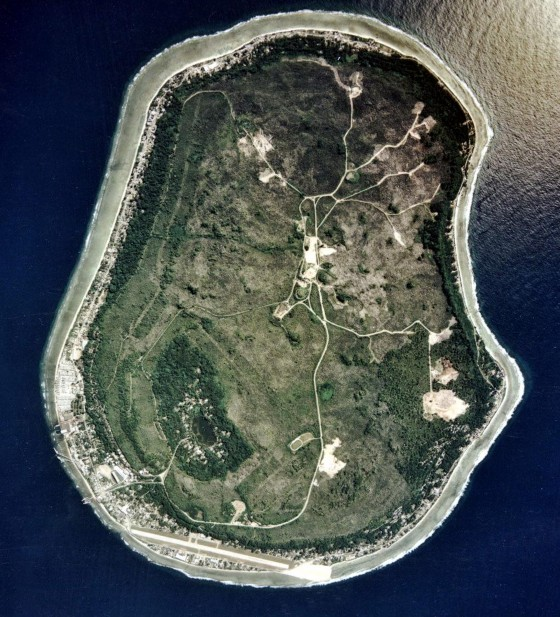
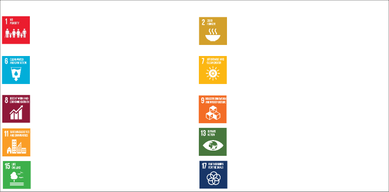
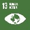

Republic of Nauru
Updated Nationally Determined
Contribution 2025-2035
Glossary
ADB Asian Development Bank
CARE4N Coastal Area Resilience Enhancement for Nauru Project
DCCNR Nauru Department of Climate Change and national Resilience
DEMA Nauru Department of Environment, Management and Agriculture
GCF Green Climate Fund
GIZ Deutsche Gesellschaft für Internationale Zusammenarbeit (
German Corporation for International Cooperation)
GEF Global Environment Facility
GCF Green Climate Fund
HGI Higher Ground Initiative
NAP National Adaptation Plan
NCD Non-communicable Disease
NDC Nationally Determined Contribution
NIISP Nauru Integrated Infrastructure Strategic Plan
NSDS National Sustainable Development Strategy
NSRUDP Nauru Sustainable and Resilient Urban Development Project
NUC Nauru Utilities Corporation
RONAdapt Republic of Nauru Framework for Climate Change Adaptation and Disaster Risk Reduction
RONPHOS Republic of Nauru Phosphate Corporation
SDG Sustainable Development Goals
SIDS Small Island Developing States
SME Small to Medium Enterprise
SMARTEN Supporting Mainstreamed Achievement of Roadmap Targets on Energy in Nauru
SPC The Pacific Community
TVET Technical and vocational education and training
UNDP United Nations Development Programme
UNFCCC United Nations Framework on Climate Change
WHO World Health Organization
Introduction and Structure of this updated NDC
The Republic of Nauru welcomes this opportunity to submit its updated Nationally Determined Contribution (NDC)
pursuant to Article 4.2 of the Paris Agreement under the United Nations Framework Convention on Climate Change
(UNFCCC). This updated NDC is intended to cover the time period from the date of submission through 31
December 2035, and replaces and supersedes the previous updated NDC submitted on 14 October 2021 and the
initial NDC submitted by Nauru on 17 November 2015.
This updated NDC is aligned with the Paris Agreement temperature goal, which requires countries to enhance the
ambition of their NDCs above and beyond previous undertakings. It is also consistent with the outcomes and
recommendations of the first Global Stocktake by featuring new and ambitious mitigation actions in the energy
and transport sector that contribute towards the need for tripling renewable energy capacity globally and
doubling the global average annual rate of energy efficiency improvements by 2030, and additionally,
accelerating actions to reduce non- carbon-dioxide emissions, in particular methane emissions, by 2030 form
waste sector.
In accordance with the accommodations under Article 4.6 of the Paris Agreement for Small Island Developing
States (SIDS) in recognition of their capacity constraints, Nauru avails itself of the flexibility afforded to
SIDS to determine the contents of its NDC. In this regard, this updated NDC describes the actions that the
country intends to take to address climate change.
As a Pacific SIDS, Nauru is highly vulnerable to the negative impacts of climate change, especially sea level
rise, extreme weather events, disruption of maritime shipping, and shocks to the global food system. As such,
the overriding priority of the Government of Nauru is to build national resilience as part of our broader
efforts to eradicate poverty and to improve the safety, security, and quality of life of its citizens. To this
end, Nauru’s climate actions are fully aligned with the Nauru
National Sustainable Development Strategy 2019-2030 (NSDS). As in our previous update, this updated NDC has been structured around the national sustainable development
priorities identified in the NSDS, which are:
This updated NDC, like our previous one, also includes
Loss & Damage
as a matter of high concern for situations when climate change impacts exceed Nauru’s adaptive capacity.
The contributions contained in this updated NDC are the outcome of an extensive consultative process with
domestic stakeholders. All of these contributions bring significant climate change adaptation and
mitigation co-benefits. Real and durable resilience requires significant investments in basic,
climate-resilient infrastructure, which, to a great extent, does not exist in Nauru.
In highly vulnerable developing countries like Nauru, infrastructure investment and climate action are
one and the same.
For the purposes of this updated NDC, actions for which Nauru requires significant external resources for
implementation are considered conditional on the receipt of those resources.
There is an enormous opportunity for transformational change in Nauru through 2035. In particular, the new
Energy Road Map, the Higher Ground Initiative (HGI), and the Nauru Sustainable and Resilient Urban
Development Project (NSRUDP) are three ambitious initiatives that will accelerate the transition of the
country to renewable energy while enhancing the resilience of communities and the economy more broadly.
Combined with the completion of the new port facility, jointly funded by the Green Climate Fund (GCF) and
the Asian Development Bank (ADB), Nauru has the potential to become a new hub of climate-resilient and
sustainable economic opportunity in the Pacific region.
The Government of Nauru is committed to building genuine and durable partnerships, which will be needed to
fully implement this updated NDC, particularly with regard to accessing affordable finance and capacity
building. To the extent feasible, this updated NDC sets out the required means of implementation for its
contributions to the global effort to address climate change.
The Government of Nauru would like to acknowledge the Asian Development Bank and the Ireland Trust Fund
for Building Climate Change and Disaster Resilience in Small Island Developing States for funding the
development of this updated NDC.
Inquiries regarding potential partnerships should be directed to the Nauru Department of Climate Change
and National Resilience.
II. Summary of Nauru’s Nationally Determined Contribution
Contributions |
Conditions |
Status |
Climate Change Co-Benefits |
SDGs Advanced |
Productive Land & Coast |
HIGHER GROUND INITIATIVE |
|
Develop Master Land Use Plan for climate change-resilient homes and critical infrastructure on Topside
as part of Higher Ground Initiative (2030)
|
Unconditional |
ACHIEVED |
Adaptation
Increased resilience to sea level rise Increased resilience to extreme rainfall events Increased resilience to drought Increased resilience to disruption of food supply
Mitigation
Increased land availability for expanded deployment of solar energy Increased land availability for high-efficiency residential development Reduced dependency on automobile transport Expansion of renewable energy generation
|
|
Construct pilot residential units on Topside as part of a new Smart Village (2030) |
Conditional on access to means of implementation |
SEEKING FUNDING |
REDUCE COASTAL EROSION |
|
Conduct a technical assessment of coastal erosion and develop a plan for implementing hard and
nature-based solutions (2030)
|
Conditional on access to means of implementation |
FUNDING SECURED |
Adaptation
|
|
|
Fully implement the hard and nature-based solutions developed under the CARE4N Project after
completion of the technical assessment (2035)
|
Conditional on access to means of implementation |
NEW |
RESILIENT PORT FACILITY |
Complete construction of new climate change- resilient port facility (2030) |
Conditional on access to means of implementation |
NEARING COMPLETION |
Adaptation
Increased reliability of imports, including essential food and medical supplies Increased capacity to receive heavy equipment necessary for large infrastructure improvements
Mitigation
|
|
Healthy & Productive People |
IMPROVE EDUCATION |
Conduct national assessment of public education system (2030) |
Conditional on access to means of implementation |
ACHIEVED |
Adaptation
Mitigation
|
|
Integrate climate change into primary school curriculum (2030) |
Conditional on access to means of implementation |
DEVELOPING TOR |
|
Operationalize new national TVET program to meet the sustainable development needs of the country,
including climate action (2035)
|
Conditional on access to means of implementation |
NEW |
|
|
|
Build new, climate change-resilient education infrastructure under the Nauru Integrated Infrastructure
Strategic Plan (NIISP) (2035)
|
Conditional on access to means of implementation |
NEW |
PUBLIC HEALTH |
|
Conduct assessment of national public health implications of climate change, including resilience of
public health infrastructure (2030)
|
Conditional on access to means of implementation |
ACHIEVED |
Adaptation
-
Increased preparedness for tropical diseases, heat stress, dehydration, and other climate change-driven
public health impacts
Increased resilience of public health care infrastructure
|
|
|
Construct new diagnostic laboratory in order to improve food, water, and vector-borne disease
surveillance (2035)
|
Conditional on access to means of implementation |
NEW |
DISPOSAL OF ASBESTOS |
Collect, transport, and dispose of all asbestos waste at a secure site off island (2030) |
Conditional on access to means of implementation |
SEEKING FUNDING |
Adaptation
|
|
Water Security |
|
Establish NUC water office and laboratory to monitor the quality of water supplied to population
(2030)
|
Unconditional |
NEAR COMPLETION |
Adaptation
-
Improved water supply, storage and distribution would provide water security in the case of prolonged
droughts and other changes in precipitation patterns
Increased resilience of domestic food supply to interruption by climate change-driven impacts
Mitigation
|
|
Undertake repairs to NUC water storage tanks (2030) |
Conditional on access to means of implementation |
ACHIEVED |
Increase NUC water storage capacity (2030) |
Conditional on access to means of implementation |
UPDATING PLAN |
|
Implement water supply components of the
Water and Sanitation Master Plan (2030)
|
Conditional on access to means of implementation |
INTEGRATED INTO NSRUDP |
Model impacts of sea level rise and salt-water intrusion into groundwater (2030) |
Conditional on access to means of implementation |
SEEKING FUNDING |
Assess the condition of groundwater supplies (2030) |
Conditional on access to means of implementation |
SEEKING FUNDING |
Install electric Reverse Osmosis Unit to NUC water desalination site (2030) |
Unconditional |
NEW |
Food Security |
Maintain ongoing agricultural technical trials (2030) |
Conditional on access to means of implementation |
SEEKING SUPPORT |
Adaptation
-
Improve resilience by collecting data to better understanding climate impacts on agriculture, fisheries
and marine resources
Improve resilience by increasing domestic food production -
Improve resilience by providing a legislative framework to strengthen governance of fisheries and marine
resources
Mitigation
|
|
Implement Food Security Related National Strategic and Action Plans (2030) |
Conditional on access to means of implementation |
SEEKING SUPPORT |
|
Collect and analyze data on climate change impacts on fisheries and marine resources (2030)
|
Conditional on access to means of implementation |
SEEKING SUPPORT |
Develop milkfish farming in support of the development and expansion of aquaculture (2030) |
Conditional on access to means of implementation |
IMPLEMENTING PROJECT |
Energy Security |
Establish power grid capable of providing stable and affordable power (2030) |
Conditional on access to means of implementation |
ACHIEVED |
Adaptation
Infrastructure with increased resilience to climate change impacts and natural disasters Increased economic resilience and diversification Increased ability to invest in other sustainable development and climate priorities
Mitigation
Increased access to cleaner and affordable energy Reduced greenhouse gas emissions Reduced dependency on fossil-fuel intensive technology and transport Reduced risk to energy supply chain disruptions
|
|
Renewable energy comprises 50% of Nauru’s power generation (2030) |
Conditional on access to means of implementation |
NEARLY ACHIEVED |
Achieve 30% energy savings (2030) |
Conditional on access to means of implementation |
IMPLEMENTING |
Renewable energy comprises 75% of Nauru’s power generation (2035) |
Conditional on access to means of implementation |
NEW |
Develop Electric Mobility Roadmap for Nauru (2030) |
Conditional on access to means of implementation |
NEW |
|
Reach 20% electric vehicle component of the Nauru total land transport vehicle fleet (2035)
|
Conditional on access to means of implementation |
NEW |
Update and implement energy efficiency regulations in transport (2030) |
Conditional on access to means of implementation |
NEW |
Conduct assessment of substitutes to diesel and petrol for transport (2035) |
Conditional on access to means of implementation |
NEW |
Healthy Environment |
ENHANCEMENT OF WASTE MANAGEMENT FACILITY |
|
Improve organization and physical structure of dumpsite cells to prevent contamination of ground water
supplies (2030)
|
Unconditional |
ACHIEVED |
Adaptation
Increase resilience of natural ecosystems Enhance water security by reducing leachate intrusion into groundwater Increase food security through production of compost for agriculture
Mitigation
|
|
Build new resource recovery facility for inorganic waste (2030) |
Conditional on access to means of implementation |
INTEGRATED INTO NSRUDP |
Build new organic waste recovery and composting facility to (2030) |
Conditional on access to means of implementation |
INTEGRATED INTO NSRUDP |
ECOSYSTEM RESTORATION AND SUSTAINABLE LAND MANAGEMENT |
|
Develop Land Use & Restoration Plan and begin implementation (2030) |
Unconditional |
ACHIEVED |
Adaptation
Increased resilience of sensitive ecosystems to climate change impacts -
Increased resilience of local water supply to climate change- induced drought by through improved
hydrological cycle and ground water recharge
-
Increased resilience to climate change-induced interruption of affordable food imports through expansion
of agro-forestry practices to increase local food production
|
|
Pilot soil restoration methods and SLM techniques (2030) |
Conditional on access to means of implementation |
ONGOING |
Establish terrestrial protected area in Anibare Bay (2030) |
Unconditional |
PENDING ASSESSMENT |
Establish and institutionalise invasive species surveillance system (2035) |
Conditional on access to means of implementation |
NEW |
SEWERAGE |
|
Implement sewerage components of the
Water and Sanitation Master Plan (2030)
|
Conditional on access to means of implementation |
INTEGRATED INTO NSRUDP |
Adaptation
Mitigation
|
|
Addressing household cesspits (2030) |
Conditional on access to means of implementation |
ONGOING |
Governance |
|
Adopt Nauru Climate Change Policy (2030) |
Unconditional |
ACHIEVED |
Adaptation
Mitigation
|

|
|
Prepare and approve the Strategic Plan for the Sustainable Development of Agriculture (2030)
|
Unconditional |
ACHIEVED |
Prepare and approve the National Coastal Fisheries Management Plan (2030) |
Unconditional |
FINALIZING REGULATIONS |
Prepare and approve the National Aquaculture Plan (2030) |
Unconditional |
ENHANCING |
Capitalise the Nauru Climate Change and Environment Protection Fund (2035) |
Conditional on finance |
NEW |
|
|
Loss & Damage |
|
Conduct a long-term risk assessment on climate change loss and damage in Nauru (2030)
Develop a national loss and damage policy framework (2035)
|
Conditional on technical and financial support
Conditional on technical and financial support
|
INTEGRATED INTO NEW CONTRIBUTION
NEW
|
Loss & Damage
|
|
|
Assess the potential loss and damage to Government revenue from the sale of fishing rights and
livelihood of the Nauruan people due to climate change impacts on tuna migration patterns (2035)
|
Conditional on technical and financial support |
NEW |
III. National Context
The Republic of Nauru is one of the smallest and most geographically isolated countries in the world.

Image courtesy of the U.S. Department of Energy Atmospheric Radiation Measurement (ARM) user facility
Our single, coral-capped island of 21 km2 is home to approximately 13,000 residents, over 90% of whom are
indigenous Nauruan. The island itself is located in the central Pacific Ocean approximately 40 kilometers
south of the Equator, and can be roughly divided into two distinct topographical areas – the low-lying coastal
perimeter and the significantly higher elevation interior area (up to 65 meters above sea level) known as
“Topside.” The vast majority of homes and critical infrastructure is located along the coast.
As a micro-state with small landmass and population, few marketable resources, and isolation from major
international markets, traditional development indicators fail to provide an accurate picture of the
circumstances on the ground. Indeed, many traditional development pathways are closed to us. According to the
United Nation’s Multi-Dimensional Vulnerability Index, Nauru ranks as one of the most vulnerable countries in the world, and ranks as the least prepared country in the world in terms of
structural resilience.
Land scarcity combined with a growing population has led to serious overcrowding. It is not uncommon to find
multiple generations of multiple families living under one roof. Much of the housing in Nauru is low quality,
while the unplanned and therefore unsustainable density strains inadequate infrastructure and puts immense
pressure on resources and the local environment. Overcrowding also contributes to many pressing social issues,
such as domestic violence and high truancy rates, and leaves communities extremely vulnerable to climate
impacts.
Nauru also faces other complex challenges, including having one of the highest rates of non- communicable
diseases (NCDs) in the Pacific, such as diabetes. The National Health Strategic Plan 2010-2015 reports that
NCDs account for 79% of deaths on the island, while obesity rates (over 70% for both men and women) are
among the highest regionally and globally. Two major contributors to this NCD epidemic are the lack of greenspaces for exercise and healthy lifestyles,
and the unaffordability of imported fruits and vegetables.
Today, the barriers to sustainable development posed by land and resource scarcity are compounded by the
impacts of climate change, which are profoundly shaping the nation's economy and the livelihoods of its
people. These multifaceted challenges highlight the need for climate actions in Nauru that address the
socioeconomic needs of communities, while simultaneously building resilience to climate change impacts. Energy
security remains a critical concern, as the country relies extensively on imported fossil fuels for
electricity and transport, the high costs of which are an impediment to economic development.
SIDS like Nauru are well positioned to be among the first nations to achieve carbon neutrality with the timely
provision of climate finance, technologies (Renewable Energy & Energy Efficiency) and capacities, which
would serve as a powerful example for other countries, while also providing enormous co-benefits like less
environmental pollution and improvements to health, a boost to sustainable economic growth and the creation of
green jobs.
Despite our challenges, Nauru is working to leverage its strategic advantages to create new economic
opportunities. Nauru’s national carrier, Nauru Airlines, already provides important connectivity within the
Pacific. Funded by the GCF and the ADB, the new port facility currently under construction will further
establish Nauru as a climate-resilient sub-regional transportation hub in the central Pacific, and will open
opportunities for local businesses to deliver value-added services for the shipping and fishing industries.
This is in addition to the many new opportunities for local workers and small businesses presented by HGI, as
discussed in more detail below.
Securing these emerging economic opportunities will depend in large part on Nauru’s ability to respond to
climate change. Like most Pacific SIDS, Nauru is highly vulnerable to the effects of climate change, which has
the potential to negatively impact coastal infrastructure, food security, water security, public health and
safety, and local terrestrial and marine ecosystems. In addition, an ambitious transition to renewable energy
has the potential to significantly enhance the reliability and resilience of the energy system, as well as
improve the country’s balance of trade, which is currently distorted by a high reliance on imported fossil
fuels. Therefore, the Government of Nauru has integrated climate action throughout its NSDS, which along with
the
Republic of Nauru Framework for Climate Change Adaptation and Disaster Risk Reduction
(RONAdapt), have been guiding policy documents for successive administrations.
Despite the strong commitment of the Government to climate action, Nauru has struggled to secure the financial
and capacity resources required for full and effective implementation of all the actions under its previous
NDC. The barriers faced by SIDS to accessing climate finance are well- established, including:
Limited domestic institutional capacity,
Burdensome application and reporting requirements,
Small projects that are not eligible for many international and bilateral funds,
Low credit worthiness due to high public debt levels and unreliable revenue streams, and
-
Higher per capita cost of projects, which penalizes SIDS with regard to some social impact metrics.
In addition, some multi-lateral development banks evaluate the creditworthiness and income classification of
SIDS based on metrics that do not adequately reflect the real economic situation in the country, which
presents an additional hurdle to accessing climate and sustainable development finance. Removing barriers to
affordable finance, would significantly accelerate the implementation of the NSDS and RONAdapt along with this
updated NDC.
Bringing about transformational change to Nauru through the implementation of country-driven strategies and
initiatives, including those contained in this updated NDC, is a top priority of the Government, but will
require scaled up financial resources from the international community, including grant-based resources, along
with technical and capacity building support.
IV. Fairness, Ambition and Progress
The Republic of Nauru communicates this updated NDC in order to facilitate clarity, transparency and
understanding of the climate actions it intends to implement through 2035. This updated NDC is fair,
ambitious, and represents a progression beyond the previous NDC submitted by the Republic of Nauru to the
UNFCCC on 14 October 2021.
Nauru is one of the world’s smallest republics and one of the least responsible for the impacts of climate
change, with levels of CO2 equivalent emissions estimated at 0.000061 gigatons in 2014, or 0.00019% of global
emissions. Coupled with its limited natural resources and domestic capacity, Nauru’s updated NDC represents a
level of ambition that far exceeds its climate footprint.
At the 4th International Conference on SIDS, Parties recognized that SIDS are highly vulnerable to climate change and
face many barriers to sustainable development. Therefore, the report of the Conference reaffirmed that “the
special case of small island developing States must continue to be recognized by the international community
and must take into account these new and emerging challenges.”
Parties further affirmed that “Small island developing States are particularly vulnerable to adverse impacts
of climate change… which represent the gravest of threats to the survival and viability of their people,
natural ecosystems and overall sustainable development.”
The ambition of this updated NDC should be considered in the context of the special circumstances of SIDS,
including the prioritization of adaptation and resilience. Nauru is working to integrate climate action into
its efforts across all policy areas and economic sectors to achieve its sustainable development priorities.
This updated NDC represents a significant enhancement from our previous NDC submitted in 2021, as it enhances
ambition in terms of scale and specificity of its intended climate actions in numerous sectors, including with
regard to greenhouse gas emissions in the energy sector. It was prepared through extensive consultation with
relevant Departments and Ministries across the Government. This updated NDC also maintains transparency of its
previous NDC by specifying specific policies and measures across relevant sectors.
V. Gender
Achieving gender equality and empowering all women and girls is a key outcome of the NSDS as part of the
Government’s goal to improve the overall quality of life for all Nauruans. Nauru thus remains committed to
advancing gender equality and social inclusiveness through efforts to implement the Paris Agreement, the
Antigua and Barbuda Agenda for SIDS and the 2030 Agenda. Nauru reaffirms its commitment to the implementation
of SDG 5 and to raising capacity for effective climate change action in accordance with SDG 13 and target
13(b).
Gender inequality and vulnerability are recognized issues across the Pacific, where women experience
inadequate political representation and participation in decision-making spaces, unequal employment access and
opportunities and inadequate access to reproductive health options. Gender- based violence is also recognized
as a significant issue.
In Nauru, whilst gender parity has been reached in primary education (and largely in secondary education), the
proportion of women in paid employment is reported in the 2011 Census as significantly lower than men at all
ages and women are over-represented in typically female professions (e.g. clerical jobs). This is echoed by
the large number of women (age 15-59) engaged in home duties as their sole economic activity (39% women vs. 12 % men from the same age group, with women
typically becoming ‘homemakers’ from a young age).
Gender equity and inclusion is fully integrated into Nauru’s two headline development projects, HGI and
NSRUDP. The HGI consultation and design process explicitly placed the needs of women and vulnerable
populations at its center, with particular attention paid to housing accessibility. The housing planned
for the smart village includes a variety of options designed for individuals and families in a variety of
life circumstances, including single women and those with children. The walkability and new urbanist
design principles also cater to the needs of women and vulnerable communities by enhancing accessibility
to public services, schools and greenspaces. The final master land use plan itself includes an entire
volume dedicated to social safeguarding needs, including in the land tenure system.
Likewise, the NSRUDP has gender equity considerations and safeguards integrated throughout the project
planning documents, including a Gender Action Plan with headline targets to fill 40% of positions in
water, waste and sewerage sectors by women, and at least 50% of the positions engaged in community
outreach, education and awareness raising. The Plan further contains provisions that guarantee equal pay
and timely payment of wages. Project performance against these indicators will be monitored by a gender
specialist.
VI. 2050 Aspirational Goal
Nauru aspires to achieve a balance between anthropogenic emissions by sources and removals by sinks by 2050,
on the basis of equity and in the context of sustainable development and efforts to eradicate poverty. This
updated NDC represents a critical step on that path. But achieving this aspirational goal will be contingent
on the effective mobilization of sufficient international financial, technical and capacity building support.
This ambitious mitigation effort must be pursued in tandem with urgent adaptation actions, including the full
implementation of HGI, NSRUDP, and other sustainable development priorities, along with major improvements to
national food security, water security, and public health and safety. In addition, Nauru has a number of
ambitious sectoral goals for 2050, including:
-
Nauru has set a conditional aspirational goal to achieve 100% renewable energy to the national grid system
by 2050,
-
A reliable and safe supply of fossil fuels until Nauru can achieve Carbon Neutral Nation status between
2030 and 2050 as all fossil fuel-based power generation switches over into renewable energy 100%, and
New ships must achieve a 50% reduction in CO2 per tonne/km by 2050.
Detailed Contributions
This Section VII provides further details of the contributions listed in the summary table in Section II above.
The achievement/implementation of contributions marked as “conditional” will depend on the receipt of external
support in the form of financial, technical, and/or capacity resources from international development partners.
These detailed contributions are organized by the following eight thematic areas:
Productive Land & Coast
Healthy and Productive People
Water Security
Food Security
Energy Security
Healthy Environment
Good Governance
Loss & Damage
For each of these thematic areas, specific contributions are identified and details are provided.
Higher Ground Initiative
1. PRODUCTIVE LAND & COAST
One of the dubious legacies of colonialism in Nauru is the phosphate mining industry. For much of the
twentieth century, Nauru’s mineral wealth was expropriated by foreign mining interests, with very little of
the economic benefits accruing to Nauruans. Only with its national independence in 1968 was Nauru finally able
to purchase control of mining operations. However, annual production had already entered into a gradual
decline. While mining operations under the state-owned enterprise RONPHOS provided a high standard of living
for Nauruans up until the late 1990s, it left most of the interior of the island ragged with large limestone
pinnacles, which made further development of the land impossible unless removed through a rehabilitation
process that was cost prohibitive until only recently.
As a consequence, the vast majority of homes and critical infrastructure in Nauru, including the airport,
hospital, and major arterial road, are located along the coast only a few meters above sea level. The
mined-out and higher elevation interior of ‘Topside’ was largely written off by successive governments, but
the impacts of climate change, including sea-level rise, have made the restoration and development of Topside
under HGI an urgent political priority for the Government.
Topside development is now made possible by domestic innovations in land rehabilitation - a process, which has
to date been completely funded by the Government, and enables construction on previously mined land. Once
considered a “moonscape,” Topside has now become the blank canvas on which Nauru can create a more sustainable
future. The HGI master land use plan is designed to restore land degraded by mining, shift urban development
inland, diversify the local economy, and support ambitious, sustainable urban development.
Pillars of High Ground Initiative |
Energy security |
Food security |
Affordable green housing |
Good Health & Well-being |
Low/zero-emissions transport |
Economic diversification |
Natural Restoration |
Education and training |
Water security |
Cultural restoration |
Land Rehabilitation |
Good governance |
The construction of a major population center and critical infrastructure on Topside will be an enormous
undertaking for our small country, but it is essential for alleviating overcrowding in the short term and for
building a more climate change resilient society in the medium to long term. The vision for HGI extends beyond
simply constructing new homes and buildings at higher elevation, it is intended to fundamentally transform
Nauru’s development trajectory. It pioneers a new model of Pacific urban development, sensitive to the
specific vulnerabilities and constraints of a small island nation, while promoting inclusive economic
opportunities.
HGI is being implemented through a phased approach in concert with land rehabilitation efforts across Topside,
and will increase the resilience of communities through proven urban design and planning strategies,
including:
-
Efficient, climate-appropriate homes based on local building methods, and able to be built and maintained
by local builders,
-
Mixed-use neighborhoods that increase access to services and greenspaces while reducing automobile use,
-
Integrated rooftop solar and battery storage to enhance energy security and economic resilience, lower
greenhouse gas emissions, and enable a rapid transition to electric vehicles,
Integrated rainwater capture, greywater harvesting, and increased water storage capacity,
-
Land grading and greenspace placement and design to enhance drainage and improve flood control, while also
improving public health outcomes and general well-being,
Restoration of natural habitats and associated ecosystem services, and
-
Community-based and larger-scale greenhouse agriculture to increase food affordability and nutrition, and
decrease import dependency.
Sustained capacity building and vocational training will be central to the success of HGI in order to make
the costs of construction more affordable, the ongoing maintenance more sustainable, and to internalize a
greater share of the economic benefit that such a major construction effort will deliver. A capable,
up-skilled workforce will have enormous spillover benefits for all other aspects of climate action in
Nauru.
Implementation Status of Existing Contributions
|
Status
|
Contribution
|
|
COMPLETED
|
Develop Master Land Use Plan for climate change-resilient homes and critical infrastructure on Topside as part of Higher Ground Initiative (2030)
|
|
SEEKING FUNDING
|
Construct pilot residential units on Topside as part of a new Smart Village (2030)
Unconditional Contribution
Development of Master Land Use Plan
HGI was prominently highlighted in Nauru’s 2020 NDC and remains a top priority in this updated NDC. In
order to develop the HGI master land use plan, the Government of Nauru engaged top firms from the United
States, New Zealand, and Australia to support a comprehensive national design and planning process for
HGI, which involved extensive consultations and workshops with all relevant Departments and Ministries of
Government and other key domestic stakeholders. Completed in 2023, this nearly three-year process produced
a whole-island master land use plan and a detailed “smart village” site plan, which are contained in eight
detailed design and planning reports:
Volume 1: Purpose + Need
Volume 2: Housing +Architecture
Volume 3: Land Planning + Resiliency
Volume 4: Land Tenure + Social Safeguarding
Volume 5: Environmental Rehabilitation + Sustainable Resource Planning
Volume 6: LP230 Landscape + Open Space Plan
Volume 7: Conceptual Engineering
-
Volume 8: Land Tenure Requirements to Enable LP230 + HGI.
Therefore, the first of Nauru’s contributions with regards to HGI has been achieved.
Conditional Contribution
Construction of First Residential Units in Smart Village
Completion of the HGI master land use plan and smart village site plan enables Nauru to move to the
construction phase. Nauru is seeking initial funding to kick start construction of the Smart Village,
which would entail:
Completion of the full engineering documentation for the Smart Village,
-
Construction of critical infrastructure connecting the Smart Village to existing transport network and
energy systems, and
-
Construction on site of buildings and necessary supporting infrastructure, including 21 single family
homes, five apartments as part of a mixed-use building, church, fire station, police kiosk, farmers market
pavilion, as well as parks and other greenspace.
The development will integrate the sustainability measures described above, which will represent a marked
improvement over the alternative of poor quality pre-fab housing in terms of both climate resilience and
greenhouse gas emissions reductions. Nauru’s Department of Climate Change and National Resilience is currently
working with partners to prepare a GCF concept note for this project.
The initial build-out would represent approximately 20% of the final Smart Village and serve as an important proof
of concept. The construction will proceed in parallel with public consultations on land tenure reform, which are
essential for enabling the expansion of the Smart Village beyond the borders of the initial 10-hectare plot, as
well as capacity building and vocational skills training initiatives, so that the Smart Village and be built and
sustainably maintained by Nauruans to the greatest extent possible.
Numerous aspects of the Smart Village would directly contribute to GHG emissions reductions in Nauru, including
the following:
Energy Security:
-
Installation of solar panels on rooftops and above car parks promote efficient and low emission energy
production.
Light-weight building construction to reduce cooling requirements.
-
High-efficiency appliances- Utilization of more efficient appliance and technology.
Affordable Green Housing:
-
Provision for passive cooling and lighting, capturing the movement of prevailing winds and increasing
availability of natural lighting throughout structures, thereby reducing overall energy load demands.
-
Based on local designs – incorporating needs and benefits from local climate and available natural resources.
-
There are provisions for open landscaped parcels next to most homes – increasing green spaces within the
community.
-
Update to renewable and sustainable utilities and infrastructure
Low/Zero Carbon Transport:
-
Encourage walkable neighbourhoods - short pedestrian walk to most daily needs, strong network of pedestrian
walks and sidewalks.
Safe streets and ample cycling tracks to encourage biking.
-
Installing of EV charging infrastructure.
Natural Restoration:
Adaptation Co-Benefits |
Mitigation Co-Benefits |
Increased resilience to sea level rise Increased resilience to extreme rainfall events Increased resilience to drought Increased resilience to disruption of food supply
|
Increased land availability for expanded deployment of solar energy Increased land availability for high efficiency residential development Reduced dependency on automobile transport
|

SDGs Advanced by Nauru’s NDC on the Higher Ground Initiative
Poverty will be reduced by the greater availability of Food security will be increased by supporting urban safe,
sustainable housing, as well as the creation of new agriculture and making land available for larger scale jobs
and economic opportunities for local businesses. domestic food production.
Water security will be increased by the incorporation of water harvesting into new residential, commercial, and
government development, as well as a modern water delivery and sewerage system.
Affordable and clean energy will be increased by the increased adoption of energy efficient appliances and other
practices to reduce energy consumption and demand.
Decent work and economic growth will be increased by new opportunities in eco-tourism, hospitality, agriculture
and aquaculture, and servicing of fishing and shipping vessels.
Sustainability of communities will be enhanced by implementing sustainable building and planning practices,
including energy efficiency, water harvesting, and transportation alternatives.
Terrestrial ecosystems and biodiversity will be enhanced by reducing development pressure in ecologically
sensitive areas of the island.
Resilience of critical infrastructure will be increased by relocation away from low-lying coastal areas vulnerable
to inundation to significantly higher elevation.
Climate action will be enhanced by dramatically increasing resilience to negative climate change impacts,
including sea level rise, extreme weather events, and variation in precipitation.
Durable partnerships and access to adequate means of implementation will be required to fully achieve these goals.
Protecting Coastal Areas
1. PRODUCTIVE LAND & COAST
As in many SIDS, a substantial majority of homes and critical infrastructure in Nauru are located along the
low-lying coastal perimeter of the island only a few meters above sea level, including primary access roads, the
hospital, airport, government buildings, and desalinisation plant. Given this close proximity, rising mean
sea-levels and increasingly severe storm surge events pose a significant risk to Nauruan communities. Rising sea
levels also contribute to coastal erosion, which is clearly visible in many locations around the island and
appears to be accelerating.
At present, sea level-rise has impacted over one-third of households between 2005-2015. While only 1.4% of
Nauru’s land area is exposed to coastal inundation events presently, this exposed land area represents over 7%
of the island’s developed areas. Mean sea-level is projected to rise under all mitigation scenarios in Nauru, consistent with global sea-level
rise trends, with an 0.18-0.22m increase likely by 2050, and up to a 0.7m increase by 2100. As mean sea-levels
continue to rise in the coming decades, the magnitude of the extreme storm events and wave effects, which ride
upon the mean sea-level, will increase, exposing more people, lands, and infrastructure during storm events. By
2050, the populations and buildings exposed to a 10-year coastal inundation events will likely more than double.
Immediate investment in both hard and nature-based protections against coastal erosion and storm surge inundation
is necessary to protect existing assets and to allow time for a managed migration of the most vulnerable areas to
Topside in the medium to long-term.
Implementation Status of Existing Contributions regarding Coastal Protection
|
Status
|
Contribution
|
|
FUNDING SECURED
|
Conduct technical assessment of coastal erosion and develop plan for implementing hard and nature-based solutions (2030)
|
Conditional Contribution
Conduct technical assessment and develop plan to address coastal protection
The Government of Nauru recently secured funding from the Global Environment Facility (GEF) under the Special
Climate Change Fund for the Coastal Area Resilience Enhancement for Nauru (CARE4N) Project in December 2024 in the
amount of USD 2,660,600, along with USD 1,000,000 in co-financing. The proposed project will employ an integrated
approach to climate change adaptation through climate proofing of coastal areas and strengthening capacity of
coastal communities vulnerable to climate change impacts. The project will target the highly vulnerable coastal
areas along the island’s coastline that witness sea level rise, king tides, coastal erosion, encroaching
shorelines and saltwater intrusion.
The project aims to build coastal resilience through coastal area protection, promoting climate resilient
practices, particularly nature-based solutions and community-based disaster risk reduction, by undertaking a range
of interlinked interventions, including:
-
Climate change impact studies, including physical impact and coastal area vulnerability assessments;
Integrated coastal management/coastal area protection planning;
-
Community awareness building and institutional capacity strengthening on climate change adaptation;
Climate proofing of physical infrastructure and natural resources in coastal areas;
-
Deployment of nature-based solutions, sea wall construction, community-based disaster risk reduction and
multi-hazard early warning systems;
Increased outreach of climate and disaster information; and
-
Increased participation of women.
All these planned interventions will restore 36 ha of land and ecosystems and bring 81 ha of coastal areas
under improved practices benefiting 4,802 people.
New Contributions regarding Coastal Protection
Fully implement the hard and nature-based solutions developed under the CARE4N
Project after completion of the technical assessment (2035)
NEW
Contribution
Status
Conditional Contribution
Fully implement hard and nature-based solutions developed by CARE4N Project
Adaptation Co-Benefits
It is unlikely that the CARE4N Project will cover the full costs of implementation of all recommended hard
and nature-based solutions, which would leave significant portions of the island’s low-lying coastal areas
exposed to increasing climate change-related impacts. Therefore, Nauru will require significant new
financial resources to enable the full implementation of the resulting coastal protection plan and this
contribution will be updated accordingly upon completion of the CARE4N Project’s technical assessment.
SDGs Advanced by Nauru’s NDC to Reducing Coastal Erosion
Water security will be increased by reducing salt water intrusion into freshwater lenses.
Climate action will be enhanced by significantly mitigating the near- and medium-term impact of sea level
rise.
The resilience of coastal infrastructure will be improved by reducing the risk of storm surge and coastal
flooding.
The protection of marine ecosystems as a nature-based solution will augment efforts to reduce coastal
erosion.
The protection of terrestrial ecosystems as a nature-based solution will augment efforts to reduce coastal
erosion.
Durable partnerships and access to adequate means of implementation will be required to fully achieve
these goals.
Resilient Port Facility
PRODUCTIVE LAND & COAST
Nauru depends almost entirely on its port for supplies of food, energy, and most other essential
goods. The century-old design of the old port required vessels to moor offshore, leaving them
unprotected from sea and weather conditions. Changing climatic factors make the offshore loading and
unloading more hazardous and difficult. Delays and complete port shutdowns became a regular
occurrence, often reaching approximately 90 days per year where operation was disrupted in part or in
total. Some ships refused to serve the port entirely.
Climate change threatened to exacerbate interruptions to the flow of essential goods into the country,
putting Nauru’s food security, energy security, and human security at even greater risk.
Implementation Status of Existing Contribution regarding Port
Complete construction of the new, climate change-resilient port facility (2030)
NEARING COMPLETION
Contribution
Status
Conditional Contribution
Construction of Climate Change-Resilient Port Facility
Nauru secured financing from the GCF and the ADB to build a new, climate change-resilient port. The
new design comprises (i) a channel through which oceangoing ships can pass between the sea and the
shore, (ii) a stable wharf with a turning berth, (iii) a breakwater to shelter the wharf and the berth
from waves, and (iv) port buildings, container terminal, and port security provisions complying with
United Nation conventions. The project is also helping reform port governance and build the capacity
of the Nauru Port Authority to ensure financial, economic, and institutional sustainability.
In addition to increasing Nauru’s resilience to climate change, the new port facility will also
significantly reduce greenhouse gas emissions. Ships will spend considerably less time at sea, and the
need to operate a ferry for loading and unloading will be eliminated. Over the 50 years of the port’s
lifetime, estimated reductions in CO2 emissions are 535,400 tons. This will also result in large
financial savings for the Government in several ways, including:
Reduction in fuel consumption,
-
Reduction in late penalties incurred when it is not safe to load and unload moored shipping
vessels, and
-
Reduction in the cost of importing construction materials and equipment for modern, climate
change-resilient infrastructure.
These savings can then be repurposed toward the delivery of other essential services and
implementation of urgent climate actions.
The new port also holds the potential to become a new engine of economic growth. This significant
upgrade of our critical infrastructure to international standards can catalyse the development of new,
value-added industries, as well as create a stronger enabling environment for new private investment.
Work was commenced on the new port on 31 January 2019, with a scheduled completion date of 30 November
2020 (670 days). The civil works were extended due to the impacts of the COVID-19 pandemic. As of the
date of submission of this updated NDC, the wharf is operational and the fuel pipeline is constructed. There remain challenges regarding the procurement of rocks for the
construction of barriers, as well as dredging the harbor to the specified depth. Final completion of
the project is now projected for December 2026
Adaptation Co-Benefits |
Mitigation Co-Benefits |
|
|
Increased reliability of imports, including essential food and medical supplies
-
Increased capacity to receive heavy equipment necessary for large infrastructure improvements
SDGs Advanced by Nauru’s NDC on the Resilient Port Facility
Food security will be increased by significantly reducing interruptions to critical food imports, as
well as by reducing the cost of healthy foods.
Decent work and economic growth will be increased by new opportunities providing value-added services
to shipping and other maritime industries.
Resilience of critical infrastructure will be increased by upgrading the main port of entry and exit
for goods so that it can continue operating in adverse climate conditions.
Partnership with the Green Climate Fund and the Asian Development is essential for the implementation
of the new port facility.
Climate action will be enhanced by reducing greenhouse gas emissions by enabling the efficient loading
and unloading of shipping vessels, which is a large improvement over the current offshore method.
Improving Education
2. HEALTHY & PRODUCTIVE PEOPLE
A well-educated and informed population is a critical component of building resilient communities and
addressing the significant human capacity constraints that Nauru faces in policy areas and economic
sectors requiring climate change adaptation and mitigation action.
In this regard, enhancing literacy and numeracy among students is a key priority for the Government of
Nauru. While the education system continues to face, challenges such as student attendance, graduation
rates, and aligning the curriculum with national needs, targeted efforts are being made to address these
issues. The Education Strategic Plan and Annual Operational Plans place strong emphasis on improving
literacy and numeracy, through professional development on high-impact teaching strategies and
implementing diagnostic assessments in the early school years to monitor student progress and planning
targeted interventions to improve literacy and numeracy rates. Additionally, initiatives to strengthen
positive behaviour management through the Amen Karoe program, attendance incentives and after-school
programs have shown encouraging results. Continued investment in education remains essential to nurturing
a skilled and informed population."
Efforts to improve primary education must be complemented by technical and vocational education and
training (TVET), with a clear path to quality employment, so that Nauruan workers can build the skills the
nation needs to implement its most ambitious climate actions, including those contained in this updated
NDC. This will not only reduce the costs of implementation and ongoing maintenance of key
climate-resilient infrastructure, but also enhance domestic ownership over project planning into the
future.
Implementation Status of Existing Contributions in Education
|
Status
|
Contribution
|
|
ACHIEVED
|
Conduct national assessment of public education system (2030)
|
|
DEVELOPING TOR
|
Integrate climate change into primary school curriculum (2030)
|
Conditional Contribution
National Education Assessment
The Department of Education has completed several assessments of the public education system, which
identified numerous opportunities for improvement. The findings have informed the development of a new
education strategy, the ‘Ijetenida’ 2023 - 2027, meaning transformation, embodying the vision and mission
of the Department of Education and Training to create a resilient and sustainable future by strengthening
the education system through an 'all of society' approach. The transformative approach includes
re-engaging parents and communities, utilising all available resources, restoring Christian and family
values, and recognising the unique potential of each student.
In addition, the Department of Education is launching in 2025 a new Nauruan studies curriculum in primary
schools. The curriculum includes Nauru language courses, history, geography, environment, and other topics
essential for children to understand their country and their national heritage. While not their primary
purpose, cultural restoration initiatives such as this are absolutely essential climate change adaptation
strategy, which will improve community decision making, increase national ownership over climate change policies and projects, and preserve a language and culture that faces a real
existential threat in the face of climate change.
Therefore, Nauru has achieved and surpassed this contribution under education.
Conditional Contribution
Integration of Climate Change into Curriculum
In partnership with the New Zealand Ministry for Foreign Affairs and Trade Nauru, the Nauru Department of
Climate Change and National Resilience is in the process of developing and integrating into the primary
school curriculum the issue of climate change and its implications for SIDS like Nauru. The Terms of
Reference for this partnership include working in partnership with local stakeholders to foster inclusive
prosperity, social equity, and environmental stewardship. The goal is to integrate climate change into the
national curriculum for Years 1 to 3 in order to prepare to equip young Nauruan students with knowledge
and understanding about climate change and its impact on their island nation. The curriculum is developed
in cooperation with the Director of Curriculum and Director of Language and other local partners to
develop engaging and age- appropriate climate change concepts and new teaching and learning materials that
are culturally appropriate and take into consideration Nauruan cultural and traditional techniques and
practices.
However, successful implementation will require additional resources to cover teacher training and
materials, in addition to specialized resources to adapt lessons to the Nauruan context. These costs are
not covered under the current partnership.
New Contributions in Education
|
Status
|
Contribution
|
|
NEW
|
Operationalize new national TVET program to meet the sustainable development needs of the country, including climate action (2035)
|
|
NEW
|
Build new, climate change-resilient education infrastructure under the Nauru Integrated Infrastructure Strategic Plan (NIISP) (2035)
|
Conditional Contribution
Operationalize national TVET Program
Nauru is making a concerted effort to improve TVET opportunities for its citizens, which is essential to
the effective implementation of all national climate change actions. On April 8th, 2025, the newly
established Department of Vocational Training and Professional Development officially commenced
operations, which builds upon previous initiatives. The Department offers six international accredited
programs (Construction, Engineering, Plumbing, Hospitality, Automotive & Electrotechnology) funded by
AusAID through Direct Funding projects under PAD. In addition, the Department offers nine national courses
(Construction, Engineering, Hospitality, Automotive, Electrotechnology, Fashion & Textiles, Joinery,
IT & Polywelding) funded through the Alternative Pathway Program. The primary objective of these
courses is to provide free, accessible skill training to all local individuals.
As of the submission of this NDC, the Department is awaiting approval on its proposal with the ADB for a
total funding of USD 10 million. The proposed initiatives include:
-
Building a multi-purpose centre to increase classroom capacity for theory training, in alignment with
the NIISP,
-
Installing solar panels to reduce energy consumption and promote sustainable practices, and
-
Upgrading existing tools, machinery, and equipment to improve training quality, efficiency, and
infrastructure safety.
Conditional Contribution
Build new climate change-resilient education infrastructure
SDGs Advanced by Nauru’s NDC on Improving Education
Education is improved through the development of a curriculum that incorporates climate change in a
way that is nationally relevant and prepares youth and adults to better understand and assess climate
change risks and effectively implement climate action.
Climate action is enhanced by building national capacity to effectively implement actions in all
relevant policy areas and economic sectors to reduce greenhouse gas emissions and build resilience to
the negative impacts of climate change, including sea level rise, extreme weather events, changes in
precipitation patterns and disruption to food production and delivery systems.
Nauru’s partnership with GIZ and The Pacific Community will enable the development of a
science-informed educational curriculum that incorporates nationally relevant information about
climate change, including the risks posed to Nauru, as well as strategies to address them.
The NIISP includes nine (9) projects for the Department of Education, including construction of new
buildings and refurbishment of existing infrastructure. The Department must ensure adequate classrooms
capacity to alleviate current overcrowding and accommodations for students with disabilities. These
upgrades will be essential to meeting the educational needs of a young and growing population,
particularly in light of the climate change challenges ahead.
Adaptation Co-Benefits |
Mitigation Co-Benefits |
|
|
|
2. HEALTHY & PRODUCTIVE PEOPLE
Improving Public Health System
Improving Nauru's public health system is an urgent climate change adaptation priority. The WHO
describes the health challenge facing Pacific Island countries as interconnected, including a high
burden of NCDs, persisting communicable diseases and growing climate change impacts, which is
exacerbated by the difficulty of most Pacific islanders have accessing quality essential health
services.
The Nauru public health system suffers from inadequate care facilities, which chronically lack
skilled health care professionals and equipment necessary to provide a wide range of public health
and primary care services. People with more complicated health conditions must be sent abroad to
Australia or India for treatment, which is very expensive and contributes to additional GHG
emissions from air travel. The WHO has identified greater self-sufficiency in health care as a key
priority for Nauru.
The COVID-19 pandemic exposed even deeper vulnerabilities of the public health system, during the
early phases of which the country experienced shortages of medicines, medical equipment, hospital
beds, and trained medical professionals. Pre-existing risk factors, such as high rates of non-
communicable diseases, likely increased the morbidity of COVID-19, while disruption in global food
supply chains due to a demobilized global workforce led directly to food shortages in Nauru.
While clearly different from a viral pandemic in important respects, climate change has the potential
to cause similarly far reaching public health consequences for the most vulnerable countries. Climate
change will undermine the maintenance of good public health in Nauru through a number of channels,
including:
Changes in the incidence of vector-borne and other infectious diseases,
-
Increases in heat stress and dehydration, particularly in the elderly and other vulnerable
individuals with underlying health risks,
-
Negative impacts on water quality and access, including through increased frequency and severity
of floods and droughts,
-
Decreased access to healthy foods, particularly through global price shocks and interruptions of
imports, which could increase malnutrition, and
-
Damage to critical health infrastructure, which is overwhelmingly located in low-lying coastal
areas, extreme weather events and sea-level rise.
According to the WHO, Nauru must bolster systems capacity to absorb shocks and stresses, adapt,
and transform in response to intensifying health threats from climate change, epidemics and
emergencies. Top priorities for the Department of Health in Nauru with regards to climate change currently
include:
-
Improving surveillance infectious diseases and prevention of both communicable and non-
communicable disease,
Increasing the quality, safety and security of the water supply, and
Improving and enhancing waste management and sewage treatment.
The Department of Public Health is seeking to establish a public health laboratory, which would enable much
more rigorous and testing for infectious disease in the population and the water supply, including those food-
and water-borne illnesses projected to increase with rising temperatures.
Implementation Status of Existing Contributions in Public Health
|
Status
|
Contribution
|
|
ACHIEVED
|
Conduct assessment of national public health implications of climate change, including on resilience of public health infrastructure (2030)
|
Conditional Contribution
Conduct assessment of public health implications of climate change
Nauru is a participant in the WHO’s Pacific Islands-WHO-Multi-country Cooperation Strategy 2024-2029, which is
developed through a regional consultative process involving 21 Pacific Island countries. The Strategy outlines
medium-term priorities for supporting and improving public health systems, with special focus on the impacts
of climate change. Particular recommendations for Nauru from the Strategy that have informed the development
of this updated NDC include:
-
Strengthen health security preparedness and response capacities to effectively detect, assess, report on
and respond to health emergencies.
-
Increase climate resilience and environmental sustainability of health systems to protect human health
from effects of climate change and environmental degradation.
-
Enhance multi-hazard risk assessment and early warning systems for timely prevention and preparedness.
-
Strengthen surveillance systems including syndromic and event-based and VPD surveillance to detect and
respond early to outbreaks, and border control in alignment with the IHR (2005).
New Contributions in Public Health
|
Status
|
Contribution
|
|
NEW
|
Construct new diagnostic laboratory in order to improve food, water, and vector-borne disease surveillance (2035)
|
Conditional Contribution
Construction of diagnostic laboratory
-
Increased preparedness for tropical diseases, heat stress, dehydration, and other climate
change-driven public health impacts
Increased resilience of public health care infrastructure
Adaptation Co-Benefits
Nauru is currently seeking funding and technical assistance to build a diagnostic laboratory on island,
which would be the first of its kind and is essential to improving public health in the country,
particularly in light of the projected increase in risk from food, water, and vector-borne illnesses due
to climate change. As this contribution will require the support of development partners, it is
conditional on receipt of the necessary means of implementation.
SDGs Advanced by Nauru’s NDC on Improving Public Health
Good health and well-being is enhanced by improving Nauru’s preparedness to handle the public health
consequences of climate change, including increased incidence of tropical disease, heat stress and barriers to
maintaining a proper diet and good hydration.
Climate action is enhanced by improving the resilience of Nauru’s public health infrastructure, as well as its
preparedness to handle the negative impacts of climate change on public health.
Nauru is partnering with the World Health Organization under its Special Initiative: Climate Change and Health
in Small Island Developing States. Nauru will also seek financial support from the GCF to fully fund the
assessment and implementation of its recommendations.
2. HEALTHY & PRODUCTIVE PEOPLE
Disposal of Asbestos
In 2014, the Government of Nauru launched an effort to remove asbestos from all buildings. At the time,
estimates put the total area of building surfaces covered by asbestos at around 212,000 square meters.
Most of the asbestos was in the form of asbestos-cement in roofing and building cladding, including the
hospital, schools, and government buildings. All asbestos are old and in various stages of deterioration,
with swab and ground testing revealing contamination at multiple testing sites. Since removal, the
asbestos waste has been insecurely stored at various locations around the island, including on the ground
near buildings and residences from which it was removed.
Asbestos, a known carcinogen, presents an ongoing health risk for all Nauruans. Nauru does not have the
facilities for proper disposal and long-term storage, and therefore, it must be collected and transported
to a suitable site off-island. The negative impacts of climate change, in particular more severe
precipitation events and flooding, increases the risk of disturbance and human exposure to asbestos
through the air and groundwater. Therefore, asbestos removal and disposal is an urgent adaptation measure
to climate change.
Implementation Status of Existing Contributions regarding Asbestos Disposal
|
Status
|
Contribution
|
|
SEEKING FUNDING
|
Collect, transport, and dispose of all asbestos waste at a secure site off-island (2030)
|
Conditional Contribution
Disposal of Asbestos
The Government was able to dispose of five containers worth of building material waste containing
asbestos, relocating it to a dump site in New Zealand. This represented a small portion of the total waste
still present on the island, but it has given the Government a more accurate estimate of its financial
needs. The cost for the collection, transport, and long-term storage of asbestos waste at a secure site
was estimated to be approximately USD 271,477.00. This would include sealing the asbestos waste in
specialized bags, loading the bags into shipping containers and transporting the containers to a suitable
site for storage. Given the international transport involved to move the waste to a secure site
off-island, the facility would also need to be capable of addressing biosecurity and quarantine issues.
SDGs Advanced by Nauru’s NDC on Disposal of Asbestos
Good health and well-being is enhanced by Climate action is enhanced by reducing the risks eliminating the
risk of exposure to asbestos, a known associated with extreme rainfall, flooding and coastal carcinogen,
currently posed by the insecure storage of inundation, which can increase the risk of asbestos asbestos
waste around the island. exposure from insecure storage.
Clean water is protected by eliminating the risk of Access to adequate means of implementation is further
contamination of ground water resources essential to finance the collection, transport and secure
currently posed by insecure storage of asbestos. disposal of insecurely stored asbestos waste.

Achievement of this contribution is contingent on the receipt of additional financial support the safe
packaging of all asbestos waste on the island and transport to a secure dump site off island. The
Government is still seeking development partners willing to help address this urgent public health risk,
which is exacerbated by the impacts of climate change.
3. WATER SECURITY
Provide a Reliable Supply of Clean Water
Securing a safe and reliable water supply for all citizens remains an ongoing priority. Nauru is a
permeable island with extremely limited natural freshwater resources. Existing capacity to collect
surface run-off is limited. The groundwater is polluted and brackish, and there is limited surface
water. Nauru’s water supply is susceptible to climate events, such as prolonged droughts, which severely
undermine the ability to supply water for domestic needs and for which focused climate change adaptation
efforts are required.
There is no potable water reticulation system currently in operation in Nauru. Most households meet their
potable and non-potable water needs through a combination of rainwater harvesting that is stored in
household rainwater tanks, desalinated water that is delivered by tankers, and groundwater. Since Nauru
frequently experiences prolonged droughts, rainwater harvesting cannot fully meet household needs.
Without a reticulated water system, the Government of Nauru struggles to provide adequate municipal
services. Nauru’s state-owned utility NUC operates five reverse-osmosis units to desalinate seawater for
potable use around the island. Though NUC has increased water supply capacity, the water supply system is
at risk from supply interruptions, particularly during drought. The maximum water supply capacity from the
five existing desalination plants is about 3,410 m3 per day, significantly exceeding the average demand of
about 1,500 m3 per day. However, orders to resupply desalinated water can take up to one month due to
limited tanker trucks, which are old and often under maintenance.
Rainwater is captured from the rooftops of households and businesses and is stored in on-site storage
tanks, however, changing rain patterns and extended droughts due to climate change limit the reliability
of this water source. Maintenance of storage tanks is a responsibility of the individual households, which
often results in contamination due to poor maintenance. There are also concerns that household rainwater
collection infrastructure such as roofs, gutters, pipes and storage tanks are unfit for sanitary water
collection and storage.
Groundwater occurs on the island within a large unconfined aquifer with direct hydraulic connection to
the Pacific Ocean. The aquifer is recharged by rainfall infiltration with discharge to the coastal
margin. On small ocean islands, fresh groundwater typically occurs as a lense-shaped body directly below the
groundwater table underlain by a zone of brackish water and, in turn, seawater. Groundwater surveys show
that the freshwater resource is highly dynamic due to due to the high permeability of the karstic
limestone composition of the island, with rapid responses to groundwater recharge from rainfall. During
periods of high rainfall, significant freshwater lenses are present under Topside. When rainfall is low,
associated with drought conditions, these lenses diminish to small areas at the coastal margin. In
extended periods of low rainfall, the much of the groundwater resource becomes brackish.
This groundwater is accessible in some populated locations, but these supplies are likely contaminated and
not suitable for drinking. The main use of groundwater is for showering, washing (kitchen & laundry),
toilet flushing and for lawn and garden irrigation. There is a risk of saltwater intrusion into
groundwater supplies, which will increase with rising sea level. In some instances at the household level,
freshwater from all three distinct freshwater sources - desalination, groundwater, and collected rainwater
- are blended, further increasing risk of contamination.
Some climate change assessments indicate that annual and seasonal mean rainfall is projected to increase in Nauru,
along with increases in the intensity and frequency of days of extreme rainfall. This presents both opportunities
and challenges with regard to Nauru’s water security, and further highlights the need for adequate investment in
proper infrastructure to control, collect, store and distribute water effectively. The existing water supply
system also produces significant GHG emissions from the desalination plants and transport trucks, as both rely on
diesel fuel, which presents the opportunity for long-term emissions reductions from proper investments in water
security.
Climate actions to improve water security featured prominently in Nauru’s 2020 update to its NDC, with a suite of
projects and initiatives covering numerous vulnerabilities in the current system.
Implementation Status of Existing Contributions in the Water Sector
|
Status
|
Contribution
|
|
NEAR COMPLETION
|
Establish NUC water office and laboratory to monitor the quality of water supplied to population (2030)
|
|
ACHIEVED
|
Undertake repairs to NUC water storage tanks (2030)
|
|
UPDATING PLAN
|
Increase NUC water storage capacity (2030)
|
|
INTEGRATED INTO NSRUDP
|
Implement water supply components of the Water and Sanitation Master Plan (2030)
|
|
SEEKING FUNDING
|
Model impacts of sea level rise and saltwater intrusion into groundwater (2030)
|
|
SEEKING FUNDING
|
Assess the condition of groundwater supplies (2030)
|
Unconditional Contribution
Establish NUC water office and laboratory to monitor the quality of water supplied to population
The establishment of NUC’s water office and laboratory will allow NUC to monitor the quality of water supplied to
the population on-island. The project was initially funded externally, however, due to performance issues with the
local contractor, NUC assumed full responsibility for the project in 2022. The project is targeted to be completed
before the end FY 25/26.
Conditional Contribution
Undertake repairs to NUC water storage tanks
NUC has completed all feasible repairs on its existing storage tanks. Non-Destructive Testing was performed on its
B13 storage tank, and it was determined that the tank can only be filled up to 70% capacity due to aging and
concerns over its structural integrity. There are potential risks of failure if the tank is filled beyond this
limit. Repair on NUC’s six other “C” storage tanks has been completed with the support of Canstruct. All C tanks
are still currently in use. These repairs serve as a temporary solution, until more water storage infrastructure
can be installed.
Conditional Contribution
Increase NUC water storage capacity
Increased water storage capacity is urgently needed to provide resilience to drought and periods of high demand.
NUC is planning to install additional water storage tanks, which included a 3 ML plus two 300 kL tanks, which
would increase storage capacity by 60 percent. The project was progressing well, with procurement processes well
underway until the project was halted for three years as a result of COVID19. Currently, NUC is revisiting the
project scope to ensure alignment with the NSRUDP.
Conditional Contribution
Implement water supply components of the
Water and Sanitation Master Plan
The
Water and Sanitation Master Plan
(and the corresponding May 2017 update) provided a detailed proposal to build the necessary water treatment works,
water storage facilities, pump stations, reticulation system and household connections. It has been now integrated
into the NSRUDP, which is being funded by the ADB.
The new NSRUDP will establish the country’s first reticulated water supply system, comprising around 24 km of
water mains and customer connections, including water meters, transfer mains, pumping stations, and associated
control systems, and serving around 1,200 households (55% of the population) and businesses in the high-density
area between Baitsi and Yaren. NSRUDP will also strengthen the non-reticulated water supply services for the
remaining households. The improved water supply system will diversify water sources and provide households with
improved access to desalinated water to supplement rainwater, which cannot be relied on during periods of
prolonged drought.
Water will be sourced from the Aiwo desalination plant. Two new water storage reservoirs and a pump station will
be built at Aiwo to ensure a continuous supply and good water pressure. Construction of all civil works and
assembly of all related equipment and infrastructure, including meters and information management system with
integrated early warning systems for water supply system is scheduled to be completed by Q3 2028.
NSRUDP will also support the development of a plan to improve the quality, safety, and resilience of (i) the
rainwater storage system for households to be connected to the new network, and (ii) the water supply system for
the remaining population (45% of the total population equivalent to about 1,000 households) who will continue to
rely mainly on rainwater and other non-reticulated sources. The project will also develop a water supply
connection scheme for households connecting to the new reticulated network and an assessment, improvement, and
optimization plan for non-reticulated water delivery systems for NUC.
Conditional Contribution
Modeling of impacts of sea level rise and saltwater intrusion into groundwater
Given the sea level rise projections, it is imperative that Nauru prepares an assessment of the potential impacts
of saltwater intrusion into its groundwater supplies. Groundwater is an important source of water for activities
like washing, toilet flushing and irrigation, and if contamination issues can be addressed, groundwater uses could
potentially be expanded. However, saltwater intrusion would force the country to increase the supply of water from
other sources, most likely energy intensive desalination plants. Nauru currently lacks the capacity to conduct
this type of assessment domestically, and therefore still requires financial and technical support.
Conditional Contribution
Assess the condition of groundwater supplies
While ground water is an important source of freshwater for the above mentioned uses, the extent of the
contamination is not well understood. An assessment of the current state of groundwater supplies is necessary
to determine the levels of contamination from sewerage and other sources, so that we can provide accurate
public health information to the public and take appropriate remedial actions. Nauru is still seeking
financial and technical support necessary to undertake such an assessment.
New Contributions in the Water Sector
|
Status
|
Contribution
|
|
NEW
|
Install electric Reverse Osmosis Unit to NUC water desalination site (2030)
|
Conditional Contribution
Install Electric Reverse Osmosis Unit
As part of the Supporting Mainstreamed Achievement of Roadmap Targets on Energy in Nauru (SMARTEN) project the
Government of Nauru aims to increase applications of feasible Renewable Energies (RE) and Energy Efficiency
(EE) technologies for supporting socio-economic development in Nauru in accordance with the country’s energy
roadmap targets. A pilot project under SMARTEN is the implementation of a 480,000 L/day Reverse Osmosis (RO)
unit, to be added to the NUC water desalination site in Menen, to take advantage of existing infrastructures
and equipment (i.e., pumps, water tanks, and reticulation system). The new unit is expected to be operated
using “free” curtailed solar energy from the 6 MW solar plant.
RO unit is presented as a demand-side energy management asset, that is a way to store excess energy from the
PV plant in the form of desalinated water. NUC will have the opportunity to run the RO unit in those hours
with excess generation and minimize energy curtailment from the solar PV plants and thus will minimize the
need for very large additional battery storage system. In addition to enhancing water security, this unit will
contribute towards reducing diesel fuel consumption for water desalination and thus reduce the GHG emissions.
Adaptation Co-Benefits |
Mitigation Co-Benefits |
-
Improved water supply, storage and distribution would provide water security in the case of prolonged
droughts and other changes in precipitation patterns
Increased resilience of domestic food supply to interruption by climate change-driven impacts
|
|
SDGs Advanced by Nauru’s NDC to Provide a Reliable Supply of Clean Water
Good health and well-being is enhanced by providing clean tested water to reduce the incidence of water borne
and water contamination related illness.
Climate action will be enhanced by strengthening resilience and adaptive capacity to climate related changes
to rain patterns.
Water security will be increased by providing a modern and reliable water delivery and sewerage system, by
eliminating the discharge of untreated household wastewater and by improving water use efficiency.
Life below water will be enhanced by treating sewage appropriately before discharge into groundwater, lagoons
and the ocean.
Life on land will be improved by reducing the discharge of sewage into inland freshwater ecosystems.
Durable partnerships and access to adequate means of implementation will be required to implement these
contributions.
4. FOOD SECURITY
Improve Food Security Through Increased Local Food Production
Increasing domestic food production is a key national development priority in Nauru’s National Sustainable
Development Strategy. Food security is a persistent challenge for Nauru, which relies on imports for
around 90% of the populations dietary intake, making the country extremely vulnerable to supply
disruptions and global price increases. Nauru’s geographic isolation contributes to high shipping costs,
which places access to fresh and healthy foods out of reach of much of the population.
The resulting poor diets have extremely negative health consequences, including some of the highest rate
of non-communicable diseases in the world. Stunting, low birth weight and mortality rate among children
under-five years are relatively high compared to global averages, with 51% of this age group having
anemia. Around 89% of the adult population are overweight and over 60% of the adult population are
obese, substantially higher than global averages. Similarly, obesity and diabetes rates for adults are
among the highest in the world. Life expectancy in Nauru for both men and women is low even relative to
other Pacific Island Countries. NCDs are the leading causes of mortality, morbidity and disability,
accounting to 79% of all deaths in Nauru, and their incidence is on the rise. Only 6% of the population
are able to meet the minimum standard of five servings of fruits and vegetables on a daily basis.
Increasing food production in Nauru faces numerous barriers, including:
Lack of knowledge and skills in agricultural production,
Lack of arable land,
Poor soil conditions,
Water availability,
Biodiversity loss, including loss of ecosystem services and soil organisms,
Land tenure system, and
-
High cost of agricultural inputs.
Climate change has the potential to further undermine efforts to improve food security with regards to
both national efforts and Nauru’s ability to import healthy food from abroad. Price volatility in
global commodity markets can be expected to increase with global warming and its negative impacts on
major food growing regions. Any food shortages at the global level will likely have profound negative
impacts on the ability of Nauruans to secure affordable supplies. For example, the 2007-2008 global
food crisis resulted in many basic commodities like rice selling for as much as four times the global
average in Nauru. In addition, the experience of COVID-19 has demonstrated how interruptions to global
supply chains abroad can sometimes completely obstruct the timely delivery of food to Nauru.
Therefore, increasing food security, including efforts to increase domestic food production, is a
critical national security priority, as well as a key climate change adaptation strategy.
Implementation Status of 2020 Contributions
Status |
Contribution |
SEEKING SUPPORT |
Maintain ongoing agricultural technical trials (2030)
|
SEEKING SUPPORT |
Implement Food Security Related National Strategic and Action Plans (2030) |
SEEKING SUPPORT |
Collect and analyze data on climate change impacts on fisheries and marine resources (2030) |
IMPLEMENTING |
Develop milkfish farming in support of the development and expansion of |
PROJECT |
aquaculture (2030) |
In addition to these contributions, the Governance Section includes additional contributions related to the
development of food security related national plans.
Conditional Contribution
Maintain ongoing agricultural technical trials
The Government has undertaken programmes in both agriculture and fisheries/aquaculture to trial methods to develop
domestic food production, but they require further development and support. Growing fruits and vegetables is
challenging in Nauru, because of low soil quality and insecure water supplies. There have been a number of
successful small-scale and trial projects - vegetable farm, piggery, seedling distribution, kitchen gardens and
public education initiatives.
Three trial farms are now in operation, including the recently-opened Menen farm to test crops in sandy soil,
which has proceeded well growing breadfruit and pandanus. There is also a 1.5 hectare extension for the purpose of
growing more staple food crops. The next phase of these trials is to develop business plans. Nauru is exploring
opportunities with new development partners to maintain and expand existing efforts, as we require both financial
and technical support.
The Government of Nauru intends to continue the existing agricultural technical trials to further develop
potential scalable long-term food security initiatives in Nauru.
Conditional Contribution
Implement Food Security Related National Strategic and Action Plans
Nauru has completed the development of several landmark policy documents intended to enhance food security in the
country, including:
Nauru Food Security and Nutrition Policy 2024/25-2028/29,
-
Nauru Climate Smart Agriculture Plan (2021-2025), and
-
Nauru Agricultural Sector Strategy 2024-2034.
The Department of Environmental Management and Agriculture (DEMA) is also finalizing the Nauru E-Agriculture
Strategy. These policy documents are the result of intensive national consultations among all relevant
stakeholders and communities. To implement these plans, Nauru has developed the “Green Harvest Initiative,” an
ambitious proposal to establish a climate-resilient, large-scale fruit tree farming system that not only
ensures year-round, affordable, and accessible fruit production for all Nauruans, but also restores the
environment and creates lasting benefits for future generations through the enhancement of food security, biodiversity, soil health and ecological balance.
The 23.85 ha agriculture plot will implement several approaches to enhance sustainability in Nauru’s
challenging environment, including:
-
Soil restoration: Ensuring the black soil used is rich in nutrients and suited for fruit tree growth.
-
Fruit tree selection: Choosing drought resilient, native, and high-yield fruit trees for long- term
sustainability.
Water management: Implementing irrigation and water conservation techniques.
-
Community engagement: focuses on building trust, offering mutual benefits, information gathering and ensuring
that landowners and the general population see themselves as key stakeholders in Nauru’s food future.
-
Monitoring & sustainability: Establishing a system to care for the fruit trees and assess their long-term
impact.
Tree Type |
Qty |
Trees/Ha |
Yield/Tree/Year |
Total Annual Yield |
Coconut |
1,000 |
200 |
50–100 nuts |
50,000–100,000 nuts |
Papaya |
300 |
1,600 |
30–100 fruits |
9,000–30,000 fruits |
Pandanus |
500 |
625 |
5-15kg fruits |
750–3,750 kg fruits |
Moringa |
10,000 |
1,100 |
50–100 pods + leaves |
500,000–1M pods |
Banana |
5,000 |
1,100 |
20–40 kg/bunch |
100,000–200,000 kg |
Almond |
1,000 |
275 |
5–10 kg nuts |
5,000–10,000 kg |
Noni |
1,500 |
400 |
50–100 fruits |
75,000–150,000 fruitss |
Breadfruit |
500 |
150 |
100–200 fruits |
50,000–100,000 fruits |
Mango |
1,000 |
200 |
50–200 fruits |
50,000–200,000 fruits |
Guava |
2,000 |
625 |
20–50 kg |
40,000–100,000 kg |
Soursop |
1,500 |
400 |
20–50 fruits |
30,000–75,000 fruits |
Nauru will require approximately USD 409,000-769,000 of funding for the Initiative (not including the costs
associated with soil restoration).
Conditional Contribution
Collect and analyze data on climate change impacts on fisheries and marine resources
The Government of Nauru has made great strides in the collection of general data on the country’s coastal
fisheries and marine resources. The system that has been put in place with the assistance of SPC enables Nauru to
comply with regional reporting standards, which facilitates comparative analysis with the rest of the Pacific
region. However, the Nauru Fisheries and Marine Resources Authority (NFMRA) still suffers from human resource
constraints, which can make consistent reporting challenging.
The collection of data on climate change-specific impacts is currently beyond the capacity of the Government and
will require technical and financial resources for implementation. Nauru is actively exploring possible regional
initiatives that could assist with this effort, but has not yet identified source of support at the time of
submission of this updated NDC.
Conditional Contribution
Develop milkfish farming in support of the development and expansion of aquaculture
Once a common practice in Nauru, milkfish farming has declined significantly over recent decades. Expanding
milkfish farming in Nauru is an important Government priority for enhancing domestic food security, which includes
plans to rehabilitate the Buada Lagoon and Anabar ponds, set up milkfish aquaculture operations and establish
management, marketing and retailing operations.
NFMRA is working to identify possible new partners to provide the necessary technical and financial assistance.
SDGs Advanced by Nauru’s NDC to Improve Food Security Through Increased Local Food Production
Food security is enhanced
by the development of the
Strategic Plan for the Sustainable Development of Agriculture
that will provide the blueprint for increased domestic agricultural supply which once implemented will increase
food supply and security. The ongoing agricultural technical trials will allow for the refinement of agricultural
techniques resulting in higher yields and greater food security. Fisheries and aquaculture-related legislation and
data collection will provide a scientific basis and legislative framework to ensure the success of a potential
aquaculture technical trial.
Good health and well-being is enhanced by being positioned to provide Nauruan citizens will healthy, high quality,
domestically produced agricultural and fish products.
Climate action is enhanced by reducing the need to import foods from long distances for consumption and by
improving resiliency by providing local food supplies.
Marine ecosystem resilience will be enhanced by the collection of data to increase the understanding of climate
change impacts on fisheries and marine resources and by providing a legislative framework to strengthen governance
of fisheries and marine resources
Durable partnerships are enhanced by continuing to work with Republic of China (Taiwan) on existing agricultural
technical trials and through continued work with SPC to monitor the impacts of climate change on fisheries and
marine resources.
These efforts will be aided by the Resilient Coastal Fisheries and Aquaculture in Nauru Project, funded by a grant
from the Adaptation Fund for approximately USD 8 million. The project will among other things provide technical
recommendation for strengthening the National Aquaculture Plan.
Adaptation Co-Benefits |
Mitigation Co-Benefits |
-
Improved resilience by collecting data to better understanding climate impacts on agriculture,
fisheries and marine resources
Improved resilience by increasing domestic food production -
Improved resilience by completing and implementing the Coastal Fisheries and Aquaculture Regulation to
strengthen governance of fisheries and marine resources
-
Improved resilience by providing training on sustainable livestock management and feed production
Greater community participation and ownership through promotion of sustainable practices
|
|
Establishing Energy Security
5. ENERGY SECURITY
Nauru is almost completely reliant on imported fossil fuels for power generation and transport, which imposes
a significant financial burden and energy supply risks on the country. The vast majority of Nauru’s energy
supply is in the form of imported liquid fossil fuels, being automotive diesel, unleaded petrol (gasoline) and
to a lesser extent Liquid Petroleum Gas (LPG).
A small but fast-growing proportion of energy supply is in the form of indigenous production of solar
electricity, as Nauru has an excellent solar resource. As the country has limited domestic energy resources,
solar energy is expanding as a viable alternative. The high cost of fuel imports, coupled with inefficiencies
in energy consumption, poses economic and environmental challenges. To address these, the Government developed
the
Nauru Energy Strategy Framework and the Nauru Energy Road Map (NERM)
, which focuses on increasing renewable energy adoption, improving efficiency, and reducing GHG emissions
through targeted interventions in electricity generation and transport, the two largest energy-consuming
sectors.
Electricity is predominantly generated by diesel-fired power plants, with public electricity generation
consuming nearly 50% of national fuel imports. Despite recent improvements in generator efficiency and the integration of solar photovoltaic (PV) systems,
the electricity grid remains costly and emission-intensive. Network losses and inefficiencies in air
conditioning and refrigeration further strain the system. Planned solar expansions, including a 6 MW PV plant
with battery storage, aim to increase the share of renewable energy to ~41%, reducing reliance on diesel fuel
and stabilizing electricity costs.
Transport is one of the largest energy consumers and GHG emitters in Nauru, primarily powered by imported
petrol and diesel. Domestic transport, which includes private vehicles, government fleets, and commercial
transport, accounts for a significant portion of fuel demand. Unlike many other island nations, Nauru has weak
public transport infrastructure and vehicle fuel efficiency policies, leading to high per capita fuel
consumption. Nauru is taking efforts to transition to electric vehicles (EVs), improve road transport fuel
efficiency, and promote ride-sharing as potential strategies to curb fuel dependence and mitigate GHG
emissions.
Nauru’s strategy to establish energy security by targeting mitigation actions in the electricity and transport
sector in the most sustainable and environmentally friendly way possible is captured in the
updated Nauru Energy Road Map (NERM 2022)
and its
Supporting Mainstreamed Achievement of Roadmap Targets on Energy in Nauru (SMARTEN) project
, which aim to enable the increased applications of feasible Renewable Energies (RE) and Energy Efficiency
(EE) technologies for supporting socio-economic development in Nauru in accordance with the country’s energy
roadmap targets. The enhanced objectives under the NERM 2022, set principal energy objectives that also serve
as Nauru’s contributions under the Paris Agreement, which are listed below.
Achieving the energy transition requires robust institutional and legal frameworks. Nauru is developing a
Nauru Energy Act, which will:
establish a clear legislative and governance framework for the energy sector,
formalize sector planning, reporting, and tariff-setting mechanisms under Cabinet oversight,
-
support steps toward more transparent and sustainable cost recovery for electricity services, and
-
clarify institutional roles and responsibilities for monitoring, reporting and verification (MRV).
The Act will also provide a legal basis for potential future participation by non-government actors in
renewable energy generation, subject to Cabinet approval and regulation.
Additional measures include:
establishing a NERM coordination mechanism,
building technical and vocational training programs for local engineers and operators,
integrating energy planning and budgeting processes into government systems, and
-
expanding the Nauru Sustainable Energy Fund (NSEF) to leverage climate finance
Electricity Sector
Although being one of the smallest and most remotely located countries in the world, Nauru is making
significant strides in renewable energy adoption, particularly solar photovoltaic (PV) technology, to
reduce its reliance on costly and carbon-intensive fossil fuels. Current installed solar energy
capacity of Nauru is 2.5 MW contributing to the grid are the 500kW ground-mounted solar farm at Buada,
donated by the United Arab Emirates, 1,125 kW solar PV farm funded by the New Zealand Ministry of
Foreign Affairs and Trade (MFAT) and the European Union (EU) and approximately 31 solar PV rooftop
installations installed on government buildings, businesses, and private residences of ~832 kW. The
ADB funded major 6 MW solar PV farm with a 5 MW/2.5 MWh battery storage system has been installation
is completed and once operational will Increase the renewable energy share to ~41% of total
electricity generation. Reduce diesel fuel consumption by ~2.75 million litres per year. While solar
energy presents a cost-effective alternative to diesel generation, high penetration of solar requires
advanced battery storage and grid management systems and the need for local capacity-building and
technical training to maintain and manage solar infrastructure. Nauru has established a target to
reach 75% of RE in 2030, which will require the deployment of new RE projects, as well as increasing
the energy storage capacity in the country.
Additionally, actions under the SMARTEN project and NEEDS project that contribute to energy security
include:
Nauru Energy Efficiency on the Demand Side (NEEDS) initiative: The goal of this project is to improve
energy efficiency in the residential, commercial and government sectors by 30%. The Ministry of
Foreign Affairs and Trade of the Government of New Zealand is sponsoring a project aiming to support
the achievement of the 30% energy efficiency target set in the NERM. The program helped develop a
Nauru Energy Balance to monitor and show how national energy use changes over time, is introducing
performance labeling regulations for electrical appliances and coordinates the roll-out of LED lights
across the residential, commercial and government sectors.
SMARTEN Project: Supporting Mainstreamed Achievement of Roadmap Targets on Energy in Nauru project
focuses on addressing barriers to achieving NERM 2022 targets and aligns with the country’s updated
NSDS. Once implemented the project is expected to reduce 1.049 million Metric Tons of CO2. The 4 main
focus areas of this program are energy policy and regulatory framework strengthening, support for RE
and EE Initiatives, promotion of RE and EE technology applications and improve energy sector capacity.
Implementation Status of 2020 Contributions in Electricity Sector
|
Status
|
Contribution
|
|
ACHIEVED
|
Establish power grid capable of providing stable and affordable power (2030)
|
|
NEARLY ACHIEVED
|
Renewable energy comprises 50% of Nauru’s power generation (2030)
|
|
IMPLEMENTING
|
Achieve 30% energy savings (2030)
|
Conditional Contribution
Establish power grid capable of providing stable and affordable power
This contribution has been largely achieved. While the Nauru Utilities Corporation (NUC) is continuing
efforts to actively improve both quality and reliability of the electricity grid, the improvement is
evident from performance indicators reported in its annual and half yearly reports.
System Average Interruption Duration Index (SAIDI) is a common metric for monitoring the reliability
of power supply by electric power utilities. The System Average Interruption Frequency Index (SAIFI)
presents the number of instances of power interruption experienced by a customer per year. Both
indicators have reduced drastically.
With assistance from the European Union, Nauru has undertaken rehabilitation and upgrades to the
distribution network, including: rehabilitation of the high voltage network, construction of an 11
kV feeder through the middle of the island to connect large off-grid loads, a solar power transfer
line, and some low voltage line upgrades.
Conditional Contribution
Renewable energy comprises 50% of Nauru’s power generation
With funding support from ADB a 6MW solar photovoltaic farm with 5MW/2.5MW battery capacity has been
installed, bringing Nauru close to achieving it 50% renewable energy target.
Conditional Contribution
Achieve 30% energy savings
The Government of Nauru is taking several measures towards achieving this goal, including:
Development of the Nauru National Building Code (under process),
-
NEEDS initiative - LED Lighting Scheme and Energy efficiency training, community awareness,
building energy code implementation, air-conditioning efficiency standards, load management
measures, and
-
Under SMARTEN project - Nauru Sustainable Energy Fund (NSEF) has been set up as a financing option
to support end users to make efficiency investments.
STRENGTHENED Renewable energy comprises 75% of Nauru’s power generation (2035)
Contribution
Status
New and Strengthened Contributions in Electricity Sector
Conditional Contribution
Renewable energy comprises 75% of Nauru’s power generation by 2035
Nauru has already taken proactive measures to be on track in achieving its 50% RE target. In this upcoming
period Nauru has raised its ambition to achieve
75% RE with a well-planned phased implementation
approach. The updated Nauru Energy Road Map supports the gradual rollout of large-scale solar power
systems to reduce Nauru’s reliance on imported fossil fuels such as Port energy saving project which will
implement solar together with wind turbines on the edge of the Port, taking advantage of the prevailing
Westerly winds. Additional installation of Solar and Wind to achieve its 75% target can be met only
through international Financial Aid. Government of Nauru is also open to exploring Public Private
partnership funding model for expanding largescale RE installation in Nauru. Along with expanding
installed RE capacity,
appropriate renewable energy storage
or increasing storage capacity through use of battery energy storage systems (BESS) or Pumped Hydro Energy
Storage (PHES) to 25-30 MW with financial aid from multilateral banks or climate funds is part of Nauru’s
aspirational future planning. Additionally, Feasibility studies and pilot projects on
other renewable energy sources
such as wind energy and hydrogen technologies will help identify viable alternatives suitable for Nauru’s
environment.
With the installation of new RE technology comes the need for enhanced local capacity to manage, operate,
and maintain solar PV systems independently. This investment in human capital ensures sustainability,
reduces dependence on external expertise, and creates local employment opportunities within the energy
sector. Nauru requires support to build in-country capacity to operate and maintain
the energy infrastructure.
A strong legislative base will provide direction for investments and operations within the sector,
enhancing long-term energy security and sustainability. The Government of Nauru aims to address this by
developing Nauru Energy Act to create an overarching legislative and governance framework for the energy
sector in Nauru and an enabling environment for private sector investment. With financial and capacity
building support Nauru aims to
build in-country capacity and undertake energy use and supply analysis
.
Developing a skilled local workforce is essential for Nauru’s energy transition. With the installation of
the new ADB 6MW Solar system, the Government is focusing on conducting training programs to build
technical skills for operating EE & RE equipment to be operated by qualified and well- trained
personnel. Further, with capacity building support from multilateral banks and climate funds the
Government of Nauru can undertake training program for government officials and key stakeholders in energy
planning, budgeting, and integrated energy development planning.
Capacity building on integrated energy development plans and coordination mechanisms with Government of
Nauru is essential. Training programs focus on energy planning to give effect to NERM coordination
mechanisms, accounting for the impact of recent changes in consumption behaviour and the integration of
larger-scale solar photovoltaic systems, which can inform future energy systems planning and ensure
effective NERM coordination.
Investment in technical and vocational education, as well as specialized training programs in renewable
energy and energy management, will empower locals to actively participate in and benefit from the growing
energy sector. Strengthening local capacity reduces reliance on foreign expertise and ensures continuity
and resilience in energy operations.
Transport Sector
Nauru has about 30 km of roads running along its coastline, 80% of which are paved. Transportation in the
island state is mainly provided by private vehicles. There are about 206 cars per thousand people in Nauru
and when motorcycles are included, this motorization index rises to about 300 cars and motorcycles per
thousand people. This indicates that locals have relatively good access to transportation services. However, transport relies predominantly on imported fuels, and the
rising demand for private transportation modes is negatively affecting the country’s fossil fuel
expenditures, energy security and GHG emissions.
Nauru currently has no taxi services and public transport system consists of a fleet of 16 buses, but
not offering a regular service. In 2019, the total number of vehicles were 4,431, from which about 2,181
vehicles were private cars, 1,035 private motorcycles, 537 government vehicles, and 675 commercial
vehicles. The majority of light-duty vehicles use petrol; however, the share of diesel vehicles has been
increasing since 2017.
The electrification of the mobility can bring many benefits to Nauru, such as reduce the amount of
imported fossil fuels, increase energy resiliency and security, increase the participation of RE in the
energy mix, improve EE in the mobility sector, improve air and noise pollution, and bring economic savings
to the country.
The
SMARTEN
project has the objective to enable the increased applications of RE and EE technologies in Nauru. As part
of the pilot under this project (Hybrid Diesel-Electric bus for Public Transportation) the first electric
bus (e-bus) in Yaren District was launched, marking a significant commitment by the Government in reducing
emissions and advancing sustainable energy solutions, December 2024. The SMARTEN project financed the
elaboration of this Electric Mobility Roadmap for Nauru, which determines the actions and investments
required to reach target of 20% of EVs by 2030.
However, the deployment of Electric Vehicles in Nauru still faces many challenges, including
infrastructural, political, institutional and financial limitations, as well as lack of awareness and
local capacity.
New Contributions in Transport Sector
|
Status
|
Contribution
|
|
NEW
|
Develop Electric Mobility Roadmap for Nauru (2030)
|
|
NEW
|
Reach 20% electric vehicle component of the Nauru total land transport vehicle fleet (2035)
|
|
NEW
|
Update and implement new energy efficiency regulations in transport (2030)
|
|
NEW
|
Conduct assessment of substitutes to diesel and petrol for transport (2030)
|
Conditional Contribution
Develop Electric Mobility Roadmap by 2030
As stated in the NERM and the Energy Compact, Nauru has established the target to reach 20% of EVs by
2030. To achieve this target, it is required to electrify at least 860 vehicles, actions that can
contribute towards this transition are listed below:
-
Transition of public transport to electric vehicles: The regular public transportation system for
Nauru to be based on 10 e-buses, with some buses as a backup and for specific trips (school buses).
The implementation of this bus transport system has an estimated budget of US$ 2,200,000 (US$ 2,000,000 M for the buses and U$ 200,000 for the chargers) once implemented, expected fuel saving
is 532 kL and 855 tons of CO2 each year.
-
E-Bike Sharing Service (BSS) will be composed of e-bikes, docking stations, etc. The implementation of
the Bike Sharing Service has an estimated budget of US$ 400,000 (which includes the purchase of bikes,
docking stations, a truck to move the bikes and other system set up costs) expected fuel saving of
74.7 kL and 175 tons of CO2 each year. The BSS will also promote healthier modes of transport and
physical exercise, bringing indirect benefits to the health sector.
-
Electric Scooter Share System (SSS), a system composed of e-scooters will be implemented, servicing
the coastal and Buada lake area. The SSS will also benefit from the deployment of charging
infrastructure in public space. The implementation of the SSS system has an estimated budget of US$
250,000 M (which includes the scooters and other system set up costs) and it is expected to save the
use of 74.7 kL of fuel, US$ 43,980 and 164 tons of CO2 each year.
It is estimated that the implementation of the roadmap will require an investment of US$ 12.4 M. once
fully implemented the roadmap actions can reduce fuel consumption and CO2 emissions in the road transport
sector by 26.4% and 20.7% respectively.
Conditional Contribution
Reach 20% electric vehicle component of vehicle fleet by 2035
The transition towards electric mobility presents a transformative opportunity for Nauru, offering
multiple environmental, economic, and social benefits that directly contribute to the country’s climate
change mitigation and resilience goals. By replacing fossil-fuel powered vehicles with electric
alternatives, Nauru can significantly reduce its dependence on imported petroleum products, thereby
enhancing national energy security and lowering exposure to volatile global fuel prices. At the same time,
integrating electric vehicles (EVs) into the transport sector will increase the share of renewable energy
in the national energy mix and improve energy efficiency, particularly when charging is aligned with
daytime solar generation. This transition is also expected to bring co- benefits, such as improved air
quality, reduced noise pollution, and measurable economic savings, all of which support sustainable
development and healthier living conditions.
Despite these clear benefits, the large-scale deployment of EVs in Nauru is constrained by a range of
infrastructural, institutional, political, and economic challenges, as well as limited public awareness
and local technical capacity. To address these barriers, the updated NERM along with the
Supporting Mainstreamed Achievement of Roadmap Targets on Energy in Nauru
(SMARTEN) program put out ambitious but achievable targets by vehicle category aiming to electrifying:
Complementary technologies, such as e-bikes and micro-mobility systems, are also prioritized, with the
target of introducing 700 e-bikes to support low-emission, short-distance travel. These key strategic
interventions, including the promotion of a modern electric public transportation system composed of 10
e-buses and four fast chargers to serve the coastal road and Buada Lagoon area. The interventions also
target the electrification of 35% of public fleets by 2030
-
amounting to 100 motorbikes, 75 cars, and 25 vans/small trucks
-
with dedicated charging infrastructure provided to adequately meet the resulting demand for Government and
institutional use.
To encourage the uptake of EVs in the private sector, the Government of Nauru is planning to introduce a
package of incentives, including tax breaks on imports and registration fees, direct subsidies and rebate
programs, as well as preferential electricity tariffs for EV charging. If the EV electricity demand could
be supplied directly from solar energy, this will maximize the climate benefits of the transition.
By implementing this phased transition, Nauru positions itself to make a measurable contribution to global
emission reduction efforts while advancing its national commitments under the Paris Agreement. The
electrification of mobility not only reduces greenhouse gas emissions but also strengthens resilience,
fosters innovation, and accelerates the shift toward a low-carbon, climate- resilient future.
Conditional Contribution
Update and implement new energy efficiency regulations in transport by 2030 Nauru’s transport sector is
one of the largest consumers of imported fossil fuels and major source of greenhouse gas emissions and air
pollutants. Updating and implementing new energy efficiency regulations in this sector is therefore
essential to achieving national energy security, reducing emissions, and aligning with global climate
commitments.
In 2021, the Government of Nauru (GoN) completed
The Sustainable Land Transport Strategy and Proposed Actions for Nauru
. The strategy focuses on the following objectives:
-
Promote cleaner and more efficient fuels and vehicles, including a policy mandating vehicle emission
standards of at least Euro 2,
Develop a roadmap to stricter vehicle emission standards and fuel quality
Integrate land-use and transport planning,
-
Develop a national plan for shifting to electric mobility for 2-wheelers and 4-wheelers, as well as
heavy-duty vehicles in the long run, and
-
Establish a capacity building program to improve the knowledge and technical capacity of Nauruans in
dealing with electric mobility.
Another key component in achieving this Sustainable Land Transport Strategy in Nauru is developing and
implementing
Land Transportation Act,
which will establish clear guidelines for vehicle importation and operation policy. The Act will include
emission and engine efficiency standards
, such as adopting Euro engine norms, which are currently not regulated in Nauru. This measure will ensure
that only cleaner and more fuel-efficient vehicles enter the country, thereby reducing fuel consumption
and associated emissions. The Act will also define
policies to promote electric mobility
, including lowering import taxes on EVs, establishing technical and safety guidelines for charging
infrastructure, and setting standards for battery disposal and vehicle recycling. Optimum use of Transport
Infrastructure for instance, solar-powered charging facilities, such as rooftop solar panels at bus stops,
will be integrated into public transport infrastructure to encourage clean and accessible energy use.
In line with the National Environmentally Sustainable Transport (EST) Policies, the updated regulations
will cover broader sustainability
objectives, including public health, road safety, noise management, equitable access to transport, and
the promotion of non-motorized transport
options like walking and cycling. These measures will also include stricter vehicle emissions control,
regular inspection and maintenance standards, and enhanced roadside air quality monitoring to track
progress and enforce compliance.
An important element of efficiency regulations is the management of end-of-life vehicles through a vehicle recycling
program.
By setting up an automobile shredder facility at Topside,
Nauru can process old vehicles to recover ferrous and non-ferrous materials, plastics, and fibers,
converting them into valuable scrap for resale. With nearly 1,868 SUVs alone occupying around 18,680 m² of
land and weighing approximately 5,604 tonnes collectively, vehicle recycling will not only free up
critical land space but also reduce environmental hazards from toxic substances such as mercury and lead.
Additionally, recycling presents a new revenue stream for the transport department and has the potential
to expand into a regional business by accepting end-of-life vehicles from neighboring Pacific countries.
Through these updated regulations, Nauru will foster a sustainable land transport strategy that
prioritizes affordable and reliable public transport, supports electrification with renewable energy, and
promotes cleaner fuels and more efficient vehicles. Collectively, these measures will lower fuel imports,
cut CO₂ and pollutant emissions, and improve the overall livability and public health of the nation.
Conditional Contribution
Conduct assessment of substitutes to diesel and petrol for transport by 2035
The NERM target to achieve reliable and safe supply of fuels – explores possible ways to reduce use or
find alternatives to liquid fuels. Given that Nauru is completely dependent on imported fossil fuels for
its transport sector, conducting a comprehensive assessment of substitutes to diesel and petrol for the
future is critical to strengthening energy security and reducing greenhouse gas emissions.
This assessment will explore the technical, economic, and environmental feasibility of transitioning to
alternative fuels such as biofuels, liquefied petroleum gas (LPG), and hydrogen
. Building on the NERM, the detailed feasibility study will examine opportunities for biofuel production
on Topside, particularly for use in vehicles and small vessels, while also assessing the long-term
potential of biomass as a local energy resource. In addition, the NERM calls for an exploration of LPG
supply options as a more economic and cleaner transitional fuel. The Technology needs assessment for Nauru
highlighted tow technologies. Research into advanced renewable technologies, including
Ocean Thermal Energy Conversion (OTEC) and Pumped Hydro Energy Storage (PHES)
, will further inform the viability of coupling alternative fuels with renewable power systems for
transport applications. A
feasibility of wind generation projects
and their role in powering future electric mobility infrastructure is envisioned as aspirational, future
planning. These studies and future plans are subject to availability of resources and technology support
from the international community.
By systematically assessing these substitutes, Nauru would be able to design a phased transition strategy
for reducing reliance on diesel and petrol, supporting its 2035 decarbonization targets while ensuring
affordability, resilience, and alignment with broader climate change mitigation commitments.
Adaptation Co-Benefits |
Mitigation Co-Benefits |
Infrastructure with increased resilience to climate change impacts and natural disasters Increased economic resilience and diversification Increased ability to invest in other sustainable development and climate priorities
|
Increased access to cleaner and affordable energy Reduced greenhouse gas emissions Reduced dependency on fossil-fuel intensive technology and transport Reduced risk to energy supply chain disruptions
|
SDGs Advanced by Nauru’s NDC to Establish Energy Security
Increased participation of women in the energy field through targeted efforts to increase the capacity and
participation of women during efforts to build domestic institutional capacity of Nauru’s energy sector.
Establishing and maintaining a stable grid and deploying greater renewables
will create job opportunities, growth for SMEs, and greater ability to invest in other government
priorities
.
The sustainability of communities will be enhanced with infrastructure resilient to disaster and climate
change impacts, and establishing sustainable transport options.
Increased access to affordable and clean energy through the uptake of energy efficient practices and
greater deployment of renewable energy.
Achievement of Nauru’s energy goals resulting in reliable and resilient infrastructure able to deliver stable and affordable power to increase productivity, and free up resources to be invested in other government priorities to enhance Nauru’s sustainable
development and diversify the economy.
Achievement of Nauru’s energy objectives will result in the
reduced consumption of fossil fuels and in fossil-fuel intensive technologies and appliances
.
Enhanced renewable energy based power generation and the uptake of energy efficient practices will lead to
reduce greenhouse gas emissions and investment in energy infrastructure resilient to climate change
impacts and natural disasters.
Durable partnerships, access to adequate means of implementation, and technology transfer will be required
to fully achieve these goals.
Successful implementation of Nauru’s energy objectives will
require strong governance and institutions capable of implementing and enforcing energy policies and
frameworks
.
6. HEALTHY ENVIRONMENT
Enhancement of Waste Management Facility
The effective management of waste is a persistent challenge for Nauru. The Department for Environmental Management
and Agriculture (DEMA) oversees waste management activity in Nauru. The current open dumpsite, managed by the
Nauru Rehabilitation Corporation (NRC), is spread over five hectares and has been in operation for several
decades. During this time, the quantity of disposable consumer goods imported into the country has grown
significantly, outstripping the capacity of the dumpsite to safely process and store the waste generated.
In 2020, the total estimated per capita waste generation was 1.28 metric tons per person annually, equivalent to
about 15,000 metric tons of waste generation in Nauru.
About 17.5% of the waste generated is organic, and about 40% consists of recyclables such as paper, cardboard,
aluminum (and other metal), plastic, and glass. Although collection services are available, open backyard
disposal, burning, and illegal dumping at sea and on unused land are common. Waste is not segregated at source
or properly recycled, and the collection and processing system is inadequate. Poor solid waste collection and
management systems pose a risk to human and ocean health, threaten biodiversity, and degrade air and water
quality.
The waste sector in Nauru contributes to methane emissions from solid waste and wastewater handling. Methane
emissions from the waste sector had 12.7% rise during 2007-2014. The current waste management facility also has
clear negative consequences for the local environment. The most dangerous impact stems from leachate, which is
produced when rainwater falls on exposed waste. Inadequate waste management increases stress on the natural
environment. Reducing this stress will increase the resilience of local biodiversity to the negative impacts of
climate change. Furthermore, leachate from the dumpsite can infiltrate the groundwater and further stress the
water system and threaten water security, which also will face additional challenges due to climate change as
discussed in the section on water security above.
The Government of Nauru has developed relevant legislation for solid waste management in Nauru through the
Environmental Management and Climate Change Act 2020, supported by the Nauru National Recycling Plan (2021) and
the Nauru National Solid Waste Strategy (2017). Additionally, with support from the ADB, Nauru is implementing
NSRUDP, which includes the development of a new organic waste processing facility and a new waste and material
recycling facility, improved waste collection and segregation system design, and gender-responsive measures
targeting households headed by women and vulnerable households.
Improving the handling of waste and removing organics and recyclables from the waste stream will help alleviate
one of the largest stresses on the local environment and water supply. The construction of a new composting
facility would also improve food security in the country by producing growing medium for local food production
and also reduce fugitive methane emissions from the landfill site. The NSRUDP will also deliver significant
contributions to improved public and environmental health by further improving sanitation services and promoting
a circular economy through composting and the recycling solid waste. The sustainability of the project will be
strengthened through extensive institutional capacity building of utilities, educating stakeholders, supporting
an improved enabling environment, updating tariffs and strengthening cost recovery systems.
Once operational the infrastructure will help divert 35% of the waste generated from the landfill for recycling
and composting, enhancing the circular economy and an
absolute GHG emission reduction of 887 tCO2e per year
.
Implementation Status of Existing Contributions in the Waste Sector
|
Status
|
Contribution
|
|
ACHIEVED
|
Improve organization and physical structure of dumpsite cells to prevent contamination of groundwater supplies (2030)
|
|
INTEGRATED INTO NSRUDP
|
Build new resource recovery facility for inorganic waste (2030)
|
|
INTEGRATED INTO NSRUDP
|
Build new organic waste recovery and composting facility (2030)
|
Unconditional Contribution
Improve organization and physical structure of dumpsite cells to prevent contamination of groundwater supplies
A Remedial Plan identified a number of actions that can maximize the utility of the existing dump site in Nauru
and significantly reduce the negative impacts on groundwater and the surrounding environment. The Government has
been unable to secure funding for the more substantial physical changes to the dumpsite, which have been deemed
cost prohibitive. Instead, Tonkin + Taylor was engaged to improve the management and organization of the site.
These changes have been effective at significantly improving its operation and reducing its impact on the
surrounding environment. Two advancements that have proven particularly effective and financially sustainable have
been compacting waste that has been pre-mixed with dirt and capping.
As no additional physical modifications are contemplated at this time, the aims of this contribution are
considered achieved.
Conditional Contribution
Build new resource recovery facility for inorganic waste
The Government is planning to construct a new waste and material recycling facility with a capacity of processing
at least 2,500 metric tons of recyclable wastes per year as part of the NSRUDP. The volume of waste stored at the
dumpsite can be significantly reduced by the construction of a new resource recovery facility for inorganic waste.
Recoverable materials include surplus tires, unwanted white goods, scrap steel, aluminum containers, and recycled
plastics. Tires have continuing value for communities for use in landscaping, and their re-use can significantly
reduce the risk of fire at the landfill. Stockpiling of unwanted white goods can supply appliance repairers with
spare parts. Securing equipment for disassembly, cutting and compacting would facilitate the recovery and export
of scrap steel. Aluminum cans are easily collected and attract strong prices internationally. Collection of
plastic drink containers for export and recycling is also worthy of consideration, though measures to minimize the
use of plastics are also being pursued. The resource recovery facility for inorganic waste is scheduled to be
completed by the end of 2027.
Conditional Contribution
Build new organic waste recovery and composting facility
Nauru has a climate that is well-suited for composting of organic waste materials. Greater availability of compost
will significantly contribute to land rehabilitation efforts on Topside as the top layer in the backfilling of
mined areas. Compost can also accelerate efforts to increase domestic
food production, both as a growing media for household gardens and any future large-scale agriculture on Topside.
Compost can also be used for re-establishing native vegetation once areas are rehabilitated. It can also
reasonably be expected that composting will reduce fugitive methane emissions.
SDGs Advanced by Nauru’s NDC on Enhancement of Waste Management Facility
Good health and well-being will be enhanced by Clean water and sanitation will be improved by reducing local pollution and risk of fire. significantly reducing leachate, which contaminates groundwater
supplies.
Enhanced waste management infrastructure will augment sustainability efforts and create economic opportunities
from resource recovery and composting.
Sustainability of communities will be enhanced by reducing the impacts of pollution and risk of fire, and by
encouraging recycling and composting.
Sustainable consumption will be encouraged through the adoption of complementary waste management policies in
order to reduce the total volume of waste that must be processed.
Marine ecosystem resilience will be enhanced by reducing runoff into coastal ecosystems.
Climate action will be enhanced by reducing the risk to water security and vulnerable marine ecosystems
Partnerships with the Pacific Community and the Government of India are already assisting with implementation and
additional finance will be required to fully implement the composting facility.
Under the NSRUDP, Nauru will construct an organic waste processing facility for composting by the end of 2027. The
new organic waste processing facility with have a capacity of at least 4,500 metric tons of compostable waste
processing per year.
Adaptation Co-Benefits |
Mitigation Co-Benefits |
Increase resilience of natural ecosystems Enhance water security by reducing leachate intrusion into groundwater Increase food security through production of compost for agriculture
|
|
6. HEALTHY ENVIRONMENT
Ecosystem Restoration and Sustainable Land Management to improve livelihoods and protect biodiversity
Before mining on the island, Nauru was covered with dense tropical rainforest, dominated in parts by the Pacific
mahogany (Ijo or Tomano) tree and pandanus. The land was managed by an agroforestry system, whereby productive
tree species were planted, tended, and cultivated within an environment that was otherwise largely unmodified.
Over a century of phosphate mining has significantly degraded about 80% of Nauru’s ecosystems and land. Mining
directly destroyed the country forest ecosystems and removed topsoil, leaving behind limestone pinnacles and poor-
quality subsoil, making the land unsuitable for agriculture. A majority of the natural habitats on the island were
destroyed, leading to a drastic decline in native flora and fauna. Arable land is primarily confined to a narrow
coastal strip. The lack of fertile land severely limits local food production, making it difficult to grow enough
food to meet the population's needs.
In addition, the increasing environmental pressures associated with economic development, such as greater
consumption of consumer goods and production of waste, are an ongoing challenge for a country with limited land
area. Many of the native species have been extirpated or are on the verge of extirpation from the island.
Although no recorded plant species are endemic to Nauru, some are rare, and their conservation is of global
relevance. As highlighted in the
Rapid Biodiversity Assessment of Nauru, there remain valuable pockets of natural flora and fauna that are worth protecting and restoring. And although greatly outnumbered by introduced species, the indigenous plant species still constitute the most
culturally-useful and ecologically-important species. Due to the unique adaptability of indigenous Pacific Island
plants to the harsh conditions of coastal and small-island environments, and their cultural and ecological
utility, their protection and enhancement are crucial as a basis for sustainable development on Nauru. Restoration
of key sites will also aid in recovery of declining bird and other animal species and in maintaining future food
security. Climate change impacts, particularly drought, will increase stress on the natural environment, which
makes reducing other stressors an urgent priority.
Supported in part by the Global Environment Facility, Nauru will build the foundation for a transition from mining
to sustainable development in Nauru by designing and testing integrated strategies for natural resource management
and outlining the financial benefits of improved land use planning and options for increasing productivity. The
expected outcomes of the project will create an enabling environment for scaling-up and mainstreaming
biodiversity, sustainable land management, and land degradation neutrality into priority sectors. The project has
four components:
-
Strengthening policy and institutional capacity for sustainable land management and biodiversity conservation,
-
Rehabilitation and restoration of degraded land to protect and reinstate ecosystem services in Nauru,
Conservation and sustainable use of Nauru’s remaining forests, and
-
Capacity building and knowledge sharing to enable scaling up towards land degradation neutrality and
biodiversity conservation.
The project will help restore agricultural productivity in a highly degraded agro-forestry system by improving
soil management and increasing soil organic matter content, increasing the vegetation and tree coverage. The
project will also mainstream biodiversity conservation into priority sectors (agriculture, tourism, mining and
infrastructure development) through land-use planning to ensure that land and resource use maximize production
without undermining biodiversity. Lastly, the project will address direct drivers of terrestrial biodiversity loss
in Nauru by creating a protected area (Anibare Bay) and implementing sustainable forest management practices in
priority areas of important biodiversity and cultural value.
Implementation Status of Existing Contributions regarding Ecosystem Restoration
|
Status
|
Contribution
|
|
ACHIEVED
|
Develop Land Use & Restoration Plan and begin implementation (2030)
|
|
ONGOING
|
Pilot soil restoration methods and SLM techniques (2030)
|
|
PENDING ASSESSMENT
|
Establish terrestrial protected area in Anibare Bay (2030)
|
Unconditional Contribution
Develop Land Use & Restoration Plan and begin implementation
The land use and restoration planning was integrated into the HGI master land use plan. The components of the plan
focused on ecosystem restoration were developed in consultation with communities and landowners to guide
decision-making, land use management and facilitate mainstreaming of biodiversity into priority sectors to ensure
that land and resource use maximize production without undermining biodiversity.
Conditional Contribution
Pilot soil restoration methods and SLM techniques
This contribution will be advanced by the “Transforming Nauru’s Food Systems through Climate Smart Agriculture”
Project, which will introduce agriculture techniques that are nature-positive, resilient, and sustainable. This
will include biodiversity-friendly soil restoration practices.
In addition, the project will:
Rehabilitate 1.5 ha of fertile soil on old mining site,
-
Put 8.2 ha of land under Sustainable Land Management (SLM) practices through the integration of Climate-Smart
Agriculture (CSA) into local farm and household garden management and development of agroforestry plantation,
Mitigate 1,805 metric tons of CO2e over 20 years through CSA management and soil restoration;
-
Facilitate establishment of initial agricultural market in Nauru with total volume of at least
$300,000 annually; and
Directly benefit to 3,500 local people, including 49% females and 51% males.
The 1.5 ha and 23 ha sites to establish an agroforestry area for demonstration and production purposes will
incorporate different agricultural crops and sustainable activities, such as medicinal plants, timber species,
ornamental plants, non-timber forest species, spices crops and trees, bee keeping, and fruit trees. In addition to
becoming an important source of agricultural production, this site will become a model agroforestry area where
people can learn.
This UNDP/GEF project will require approximately USD 8 million in funding, with a projected start date of January
2026 completion date in 2032.
Unconditional Contribution
Establish terrestrial protected area in Anibare Bay
A line of wooded cliffs overlooking Anibare Bay comprises the richest remaining native vegetation on the island.
In 2008, BirdLife International identified the Anibare Bay escarpment as an “Important Bird and Biodiversity Area”
(IBA). The Government will take steps to protect the Anibare Bay area, including the coastal area and escarpment,
with a view to conserving and managing biodiversity as a means to protect the last undisturbed landscape in Nauru
and important bird habitat and refuge for rare and endangered species of plants.
Nauru received a grant from the GEF of approximately USD 3.5 million which is helping to dramatically improve
sustainable land management, including through the designation of 50 ha of the Key Bio Diversity Area Anibare
Bay as a protected area. Anibare Bay Key Biodiversity Area (KBA) is the area of highest biodiversity value in
Nauru and several strategic documents, including the Fifth National Report to the UN Convention on Biological
Diversity (UNCBD) have prioritized this site for biodiversity conservation. The area attained recognition as a Key Biodiversity Area and as an Important Bird and Biodiversity Area (IBA)
having met two of the four global criteria for IBA status.
All mining on the site was halted on 26 Nov 2020 pursuant to Cabinet Resolution 842/2020 pending an analysis of
the long-term assessment of the economic social and environmental benefits of conserving the last remaining
forested areas in Nauru, which is now in progress.
New Contributions in Ecosystem Restoration Restoration and SLM
|
Status
|
Contribution
|
|
NEW
|
Establish and institutionalise invasive species surveillance system (2035)
|
Conditional Contribution
Invasive species surveillance by 2035
Increased resilience of sensitive ecosystems to climate change impacts
-
Increased resilience of local water supply to climate change-induced drought by through improved hydrological
cycle and ground water recharge
-
Increased resilience to climate change-induced interruption of affordable food imports through expansion of
agro-forestry practices to increase local food production
Adaptation Co-Benefits
Nauru is in the process of establishing and institutionalising a surveillance system for invasive species.
Activities include strengthening capacity and expanding monitoring, with high priority placed on both the natural
environment and agriculture. DEMA is working with partners SPREP and NRG to develop invasive species action plan,
including an early detection rapid response plan.
SDGs Advanced by Nauru’s NDC to Restore Ecosystems and Protect Biodiversity
Food security is enhanced by increasing local production through expansion of agro-forestry methods.
Water security is enhanced by the restoration of natural ecosystems to increase ground water recharge.
Resilience to climate change is enhanced by building the resilience of sensitive ecosystems to negative
climate change impacts through the reduction of other local, anthropogenic stresses and the mainstreaming of
sustainable land use planning and land degradation neutrality, with additional climate change adaptation co-
benefits in the areas of food and water security.
Local biodiversity is enhanced by establishing a protected area in Anibare Bay, identified as Nauru’s most
important and diverse terrestrial ecosystem, as well as through the wider use of sustainable land management
to curb unsustainable development around the island.
Durable partnerships and access to adequate means of implementation will be critical to the implementation of
this contribution, which will include funding provided by the national government and the Global Environment
Facility, as well as technical support from the Taiwan Technical Mission.
6. HEALTHY ENVIRONMENT
Establish Effective Sewage Treatment
Sewerage is an ongoing challenge in Nauru. The system consists of primary treatment in the form of on-site
septic tanks or cesspits, however, there are currently no pollution safeguards, building codes, or other
controls. No centralized sanitation collection system is in place.
It is estimated that only 66% of the population has access to improved sanitation facilities (e.g.,
septic tanks), and the rest use pit latrines and other less sanitary facilities. Although on-site sanitation systems serve households, institutions, and businesses, weak regulation and
enforcement have resulted in many of the septic tanks leaking or being maintained improperly, leading to
environmental contamination. It is suspected that a number of septic tanks and cesspits are damaged and
discharging raw sewage to the adjacent soil, thereby contaminating groundwater supplies. There is a need
for an assessment of the condition of household cesspits, but this requires both funding and technical
assistance.
In addition, desludging trucks, operated by the NUC, are in poor condition. The existing septage
treatment plant at Nauru Primary School is nonfunctional, and poses a potential health risk to the
children, as well as the local community and environment, including through runoff into the ocean. Nauru
also lacks effective hygiene promotion programs, which contributes to outbreaks of diarrheal illness and
typhoid fever. Inadequate sanitation also causes school closures throughout the country.29
Sludge and sewage are transported to the National Sanitation Facility, where they undergo only minimal
treatment before being discharged into the environment. While the sludge processing facility initially
relied on an aerobic treatment method, this system is no longer operational. The facility currently
operates only as a collection of above-ground holding tanks and requires replacement to address these
issues.
The improper wastewater treatment significantly contributes to greenhouse gas (GHG) emissions,
particularly through the release of methane (CH₄) and nitrous oxide (N₂O).
The existing treatment plant cannot serve as a long-term reliable sewerage solution to treat and
effectively dispose of human waste remains a priority. Improving sanitation is a critical climate change
adaptation measure, as the current situation adds stress to many of the same systems that will be affected
by the negative impacts of climate change, particularly the environment, public health and water systems.
Removing this stress through the deployment of proper sanitation infrastructure is essential to building
broader climate change resilience in the country.
Implementation Status of Existing Contributions regarding Sewerage Treatment
|
Status
|
Contribution
|
|
INTEGRATED INTO NSRUDP
|
Implement the sewerage components of the Water and Sanitation Master Plan (2030)
|
|
ONGOING
|
Address household cesspits (2030)
|
Conditional Contribution
Implementation of the sewerage components of the
Water and Sanitation Master Plan
The
Water and Sanitation Master Plan
(and the corresponding May 2017 update) provided a detailed proposal and the costs to address short-term repairs
to the current sewage treatment plant, construct a new sewage treatment plant and build the necessary sewer
reticulation, septic tanks, pump stations and other necessary infrastructure.
This plan has been integrated into the ADB-funded NSRUDP. The sewerage component of the NSRUDP includes
construction of a new septage treatment facility (with reuse or disposal of dried biosolids) at the existing
dumpsite to treat toilet waste from septic tanks and cesspits. Construction is scheduled to be completed by the
first quarter of 2028. The old National Sanitation Facility next to Nauru Primary School is scheduled to be
decommissioned by the end of 2025 and land reinstated. The ADB grant will also cover the purchase of a new septage
truck for pumping out toilet waste from septic tanks and cesspits and transporting the waste to the dumpsite for
treatment. The new waste treatment facility will also receive sludge from existing sewage treatment plants on the
island for drying and reuse/disposal. Biosolids from the treatment process would be made available to the NRC for
land rehabilitation and for potential mixing with green waste to create compost.
The new septage processing facility will have a capacity to manage around 640 m3 of sludge per year, including
through a wastewater lagoon and drying beds, sufficient to serve 100% of the population. The project will also
produce a maintenance scheme to assess, improve, and maintain household on-site sanitation systems, prioritizing
improvements for vulnerable households and households headed by women. The infrastructure will service existing
properties, with allowance for growth over the next 40 years.
Conditional Contribution
Addressing household cesspits
The scope of the NSRUDP does not include household level components of the sanitation system. While the regulatory
improvements, including new building codes, and capacity building under the project will deliver long-term
benefits in this area, the Government must still address the immediate public health and environmental problem of
leaking cesspits and septic tanks.
The Government is installing new twin-chamber septic tanks as funding permits, primarily through SPC initiatives.
A total of 40 household septic tanks have been installed over the past two fiscal years, and the Government
intends to install another twelve. This ad hoc approach is not ideal, and more sustainable funding for an easily
deployed technology would allow us to significantly strengthen the resilience of our public health and water
system, as well as the natural environment, to the negative impacts of climate change.
Adaptation Co-Benefits |
Mitigation Co-Benefits |
|
|
|
SDGs Advanced by Nauru’s NDC to Establish Effective Sewage Treatment
Good health and well-being is enhanced by providing clean, tested water to reduce the incidence of water borne and
water contamination related illness and by eliminating sewage discharge into ground water supplies.
Climate action will be enhanced by strengthening resilience and adaptive capacity to climate related changes to
rain patterns.
Water security will be increased by providing a modern and reliable water delivery and sewerage system, by
eliminating the discharge of untreated household waste water and by improving water use efficiency.
Life below water will be enhanced by treating sewage appropriately before discharge into groundwater, lagoons and
the ocean.
Life on land will be improved by reducing the discharge of sewage into inland freshwater ecosystems.
Durable partnerships and access to adequate means of implementation will be required to implement these
contributions.
7. GOVERNANCE
Institutional and Governance Arrangements to Support Implementation of Climate Priorities
Responding and adapting to climate change and its impacts requires a whole-of-Government approach and
necessitates the involvement of all Ministries and Departments. An effective response to climate change will
require strong leadership and coordination within the Government supported by effective legal and policy
frameworks. Nauru has taken important steps to put in place the necessary institutional and governance
structures to more effectively address climate change.
In 2020 Nauru adopted the
Environmental Management and Climate Change Act
which centralizes and codifies authority with the Minister and Department responsible for environment and
climate change matters to manage and protect the environment of the Republic of Nauru, promote sustainable
development and facilitate compliance with Nauru’s international and regional environment related obligations.
Notably the
Environmental Management and Climate Change Act
includes the establishment of the
Climate Change and Environmental Protection Fund
for,
inter alia
: (a) the protection and conservation of the reef and foreshore; (b) the preservation and protection of
flora and fauna; (c) the prevention of coastal erosion and maintenance of high-water mark; (d) food
security; (e) health; (f) soil conservation; (g) critical environmental restoration activities; (h) the
management of sensitive and fragile ecosystems; and (i) the protection from pollution of and removal of
pollution from land, water and air.
The
Climate Change and Environmental Protection Fund
is supported by grants, donations or contributions from international organisations, special appropriations
from the Government, and environment-related levies or taxes, and will play a crucial in supporting the
implementation of Nauru’s climate objectives and projects, many of which are enumerated in this updated NDC.
Nauru has also begun developing its National Adaptation Plan (NAP), which is scheduled to be completed for
submission to the UNFCCC by the end of 2025. The NAP process enables Nauru to undertake mid and long-term
climate adaptation planning. The NAP process supports the integration of climate change adaptation
considerations into development planning and will identify areas where further climate change-related
adaptation projects and programmes may need to be undertaken.
Implementation Status of Existing Contributions regarding Governance
|
Status
|
Contribution
|
|
ACHIEVED
|
Adopt Nauru Climate Change Policy (2030)
|
|
ACHIEVED
|
Prepare and approve the Strategic Plan for the Sustainable Development of Agriculture (2030)
|
|
FINALIZING REGULATIONS
|
Prepare and approve the National Coastal Fisheries Management Plan (2030)
|
|
ENHANCING
|
Prepare and approve the National Aquaculture Plan
|
Unconditional Contribution
Adopt
Nauru Climate Change Policy
The
Nauru Climate Change Policy
was adopted in 2020, completing this contribution under the previous update to the NDC. The Policy provides an
overarching framework that brings together existing policies to guide action on climate change adaptation,
mitigation, disaster risk reduction, education and advocacy in Nauru. It is framed in the context of the
Government’s overriding priority to eradicate poverty and to improve the safety, security and quality of life
of our citizens. Successful implementation requires collaboration across Government, Government Controlled
Enterprises, State Owned Enterprises, non-governmental and civil society organisations, religious
institutions, the private sector, and the people of Nauru.
The policy formally establishes the Department of Climate Change and National Resilience as the Government
authority responsible for overseeing the implementation and priority setting of Nauru’s response to climate
change. Consistent with this updated NDC, the policy emphasizes the importance of building and protecting
climate resilient infrastructure in key sectors, the country’s main climate change adaptation challenge.
Increasing food security through increased domestic production is another priority that deserves highlighting.
The policy also affirms Nauru’s commitment to reduce greenhouse gas emissions in accordance with international
its obligations, primarily through the accelerated deployment of renewable energy, energy efficiency, and
energy conservation.
Unconditional Contribution
Prepare and approve the
Strategic Plan for the Sustainable Development of Agriculture
The Government of Nauru has finalized and adopted what is now known as the
Nauru Agricultural Sector Strategy 2024-2034.
The strategy is based on a set of core principles, namely:
Resource use efficiency,
Natural resource conservation and enhancement,
Agriculture as viable livelihoods,
Enhanced resilience of communities and ecosystems, and
Responsible and effective governance mechanisms.
Agriculture is identified as a key national sector development, with a view to contributing to the national
income, diversifying the food supply, sourcing raw materials, and employment opportunities. The strategy
includes a comprehensive analysis of the major barriers to agricultural production in Nauru, as well as
options for overcoming them. The Strategy was the result of an extensive stakeholder participatory
consultation process.
Unconditional Contribution
Prepare and approve the
National Coastal Fisheries Management Plan
The Government of Nauru committed to prepare a National Coastal Fisheries Management Plan in accordance with
the Coastal Fisheries and Aquaculture Act 2020. The objectives of the Act include the preservation,
protection and development of coastal fisheries waters, ensuring the sustainability of coastal fisheries
waters to protect livelihoods and enhance food security.
This Plan will be implemented through the adoption of the Coastal Fisheries and Aquaculture Regulations, which
are in the final stages of drafting. This bill sets out a detailed consultative process for delineation of
community fisheries management areas, along with regulations for the use of these areas. This includes clear
licensing and enforcement provisions. The Nauru Fisheries and Marine Resources Authority (NFMRA) is already
conducting community consultations to develop community-based fisheries management plans for delineated areas, which will then be locked in
under the regulations. This bottom-up process to finalize the regulations will strengthen the uptake and
compliance of local communities.
Unconditional Contribution
Prepare and approve the
National Aquaculture Plan
The Coastal Fisheries and Aquaculture Act 2020 also includes the commitment to prepare a National
Aquaculture Plan. In order to effectuate this commitment, the Government successfully applied in
partnership with SPC for funding from the Adaptation Fund. The Resilient Coastal Fisheries and
Aquaculture in Nauru Project was approved in March 2023, securing approximately USD 8 million in total
funding, which officially commenced on 8 April 2025. Among various institutional and physical
improvements to the aquaculture sector in Nauru, the project will provide recommendations and support to
the NFMRA to develop a roadmap for the implementation of aquaculture provisions of the Act, including a
comprehensive National Aquaculture Development Plan. The project is scheduled to complete its work in
2028.
New Contributions regarding Governance
|
Status
|
Contribution
|
|
NEW
|
Capitalise the Nauru Climate Change and Environment Protection Fund (2030)
|
Conditional Contribution
Capitalise the Nauru Climate Change and Environment Protection Fund
The Climate Change and Environment Protection Fund was established under the Environmental Management and
Climate Change Act 2020, the purpose of which was elaborated later in a set of regulations as threefold:
Improving resilience to climate change through adaptation and mitigation measures; and
Increasing uptake of renewable energy; and
-
Ensuring climate change information is available to end-users.
Further information is available about the Fund in its Guidelines.
The fund is intended to play a critical role in funding climate action in Nauru in a manner that
facilitates effective and streamlined cooperation with international development partners, while also
ensuring accountability and strong national ownership over all projects. It seeks to raise new funding
from international development partners to establish the fund as an important domestic source for
small adaptation and mitigation projects, with an initial goal of reaching USD 10 million by 2030.
Adaptation Co-Benefits |
Mitigation Co-Benefits |
|
|
|
SDGs Advanced by Nauru’s NDC to Establish Stronger Institutional and Governance Arrangements
Strong and transparent governance and institutions will ensure women’s full and effective participation and
equal opportunities in the consultation and decision- making process, which will also translate into greater
educational and economic opportunities for women as a part of Nauru’s sustainable and low-carbon future.
Strong governance and institutions for climate change and sustainable development are important for the
successful implementation of Nauru’s climate objectives, as well as to build domestic and international
confidence in Nauru’s institutions.
Strong and transparent governance and institutions will support Nauru’s efforts to build durable partnerships,
increase access to adequate means of implementation and encourage technology transfer and capacity support to
Nauru.
Improved governance and institutions could encourage increased official development assistance and foreign
direct investment to Nauru, a country with great need of support from partners to successfully implement its
national plans and programming.
Successful adoption and implementation of Nauru’s Climate Change Bill and Policy would ensure accountability
and transparency, as well as to ensure inclusive and representative consultation and decision- making
processes. Stronger governance will establish institutions capable of implementing and enforcing climate
policies and frameworks.
8. LOSS & DAMAGE
National Preparedness for Climate Change Loss & Damage
The world has thus far failed to reduce its greenhouse gas emissions at a rate capable of delivering a reasonable
chance to limit the rise in average global temperatures to less than 1.5°C. This dramatically increases the risk
that Nauru will experience significant loss and damage from the negative impacts of climate change. Like all SIDS
and other particularly vulnerable developing countries, Nauru will require a fully-funded international mechanism
to address the climate change impacts that can no longer be avoided and result in loss and damage, including loss
of economic opportunities, regression in development indicators, loss of natural ecosystems and ecosystem
services, and loss of secure, habitable land.
The Government of Nauru welcomes the recent decision of the Conference of Parties to the UNFCCC to create a Loss
and Damage Fund. The International Mechanism and the Fund must have sufficient capacity and funding to assist
particularly vulnerable developing countries in assessing the risks that result in loss and damage, quantify the
potential extent such the loss and damage, and assist with damage reduction and risk mitigation measures, and with
funding of remedial measures if and when such loss and damage occurs. The kinds of impacts that this loss and
damage framework must address are set out in decision 3/CP.18, namely impacts from extreme weather events and slow
onset events, and should also include non-economic losses and damages, migration, displacement and human mobility.
Implementation Existing Contributions regarding Loss and Damage
|
Status
|
Contribution
|
|
INTEGRATED INTO NEW CONTRIBUTION
|
Conduct a national long-term risk assessment on climate change loss and damage in Nauru (2030)
|
Conditional Contribution
Conduct a national long-term risk assessment on climate change loss and damage
Nauru’s previous contribution regarding its national efforts to address loss and damage was to conduct a long-term
risk assessment (LTRA), which should include:
-
Quantification of the specific risks of loss and damage under different temperature scenarios from both sudden
and slow onset events;
Timing at which these risks are may be experienced;
-
Economic and social costs of such impacts associated risks, including preparation and maintenance of
inventories of national assets at risk;
Non-economic losses and damages; and
-
Options available and under development to manage, transfer, and share risks, as well as for recovery.
Nauru has been unable to obtain the financial and technical support necessary to conduct such a LTRA.
Nonetheless, due to the importance of this particular issue, Nauru is strengthening this contribution as part
of this updated NDC (see below).
New Contributions regarding Loss and Damage
|
Status
|
Contribution
|
|
NEW
|
Develop a national loss and damage policy framework (2035)
|
|
NEW
|
Assess the potential loss and damage to Government revenue from the sale of fishing rights and livelihood of the Nauruan people due to climate change impacts on tuna migration patterns (2035)
|
Conditional Contribution
Develop loss and damage policy framework
As described above, Nauru’s previous contribution in the area of loss and damage was to conduct a LTRA. Given
the increasing severity of the climate crisis, that contribution is no longer sufficient to meet Nauru’s
needs. Therefore, Nauru intends to develop a comprehensive loss and damage policy framework. In addition to
the LTRA, this policy framework will also establish the institutional capacity to monitor and track loss and
damage, as well as to access loss and damage funding mechanisms currently being developed internationally and
regionally. Achieving this contribution will require financial and technical support from international
development partners.
Conditional Contribution
Assess potential loss and damage to fisheries revenue
The sale of fishing rights under the Parties to the Nauru Agreement (PNA) Vessel Days Scheme (VDS) provides a
very significant source of revenue to the Government and livelihood of the Nauruan people. Projections on
climate change impacts in the Pacific conclude that tuna migration patterns will change in a manner that
negatively impacts this important revenue and livelihood source due to a shift of the tropical convergence
zone further east. Other potential negative impacts that have the potential to affect fisheries revenue
include:
These can all be expected to have a significant impact on residents.
SDGs Advanced by Nauru’s NDC to Conduct a National Long-Term Risk Assessment
Climate action will be enhanced by fostering a more Durable partnerships and access to adequate detailed and
comprehensive understanding of the risks means of implementation, particularly through associated with climate
change, as well as the options cooperation under the Warsaw International available for mitigating those risks.
Mechanism, will be required for implementation.
Nauru is seeking technical support that will complement the GCF-funded Regional Tuna Project to assess the impact
such changes in the migration of tuna will have on revenue and livelihoods, in order to enable proper planning,
including diversification strategies and engagement of the International Mechanism and Loss and Damage Fund.